ls --color=always -l /binIntroduction au CI/CD
ENSG - Décembre 2023
Présentation disponible à l’adresse: https://cicd-lectures.github.io/slides/2023
Version PDF de la présentation : Cliquez ici
This work is licensed under a Creative Commons Attribution 4.0 International License
Code source de la présentation: https://github.com/cicd-lectures/slides
Comment utiliser cette présentation ?
Pour naviguer, utilisez les flèches en bas à droite (ou celles de votre clavier)
Gauche/Droite: changer de chapitre
Haut/Bas: naviguer dans un chapitre
Pour avoir une vue globale : utilisez la touche "o" (pour "Overview")
Pour voir les notes de l’auteur : utilisez la touche "s" (pour "Speaker notes")
Bonjour !
Damien DUPORTAL
Staff Software Engineer chez CloudBees pour le projet Jenkins 👨🏻⚖️
Freelancer
Me contacter :
damien.duportal <chez> gmail.com
Julien LEVESY
Senior Platform Engineer @ Voi 🛴
Me contacter :
jlevesy <chez> gmail.com
Et vous ?

A propos du cours
Alternance de théorie et de pratique pour être le plus interactif possible
Reproductible à la maison, pensé dans le contexte du "Covid à la maison"
Contenu entièrement libre et open-source
N’hésitez pas ouvrir des Pull Request si vous voyez des améliorations ou problèmes: sur cette page (😉 wink wink)
Une petite histoire du génie logiciel
Comment mener un projet logiciel?
Avant : le cycle en V

Que peut-il mal se passer?
On spécifie et l’on engage un volume conséquent de travail sur des hypothèses
… et si les hypothèses sont fausses?
… et si les besoins changent?
Cycle trèèèèès long
Aucune validation à court terme
Coût de l’erreur décuplé
Comment éviter ça?
Valider les hypothèses au plus tôt, et étendre petit à petit le périmètre fonctionnel.
Réduire le périmètre fonctionnel au minimum.
Confronter le logiciel au plus tôt aux utilisateurs.
Refaire des hypothèses basées sur ce que l’on à appris, et recommencer!
"Embrasser" le changement
Votre logiciel va changer en continu
La clé : gérer le changement!
Le changement ne doit pas être un événement, ça doit être la norme.
Notre objectif : minimiser le coût du changement.
Faire en sorte que:
Changer quelque chose soit facile
Changer quelque chose soit rapide
Changer quelque chose ne casse pas tout
Heureusement, vous avez des outils à disposition!
Et c’est ce que l’on va voir ensemble pendant les trois prochains jours!
Préparer votre environnement de travail
Outils Nécessaires 🛠
GitPod
GitPod.io : Environnement de développement dans le ☁️ "nuage"
But: reproductible
Puissance de calcul sur un serveur distant
Éditeur de code VSCode dans le navigateur
Gratuit pour 50h par mois (⚠️)
Open-Source : vous pouvez l’héberger chez vous
Démarrer avec GitPod 🚀
Rendez vous sur https://gitpod.io
Authentifiez vous en utilisant votre compte GitHub:
Bouton "Login" en haut à droite
Puis choisissez le lien " Continue with GitHub"
⚠️ Pour les "autorisations", passez sur la slide suivante
Autorisations demandées par GitPod 🔓
Lors de votre première connexion, GitPod va vous demander l’accès (à accepter) à votre email public configuré dans GitHub :

⚠️ Passez à la slide suivante avant d’aller plus loin
Validation du Compte GitPod 📱
GitPod vous demande votre numéro de téléphone mobile afin d’éviter les abus (service gratuit). Saisissez un numéro de téléphone valide pour recevoir par SMS un code de déblocage :

⚠️ Passez à la slide suivante avant d’aller plus loin
Choix de l’Éditeur de Code ✎
Choisissez l’éditeur "VSCode Browser" (la première tuile) :
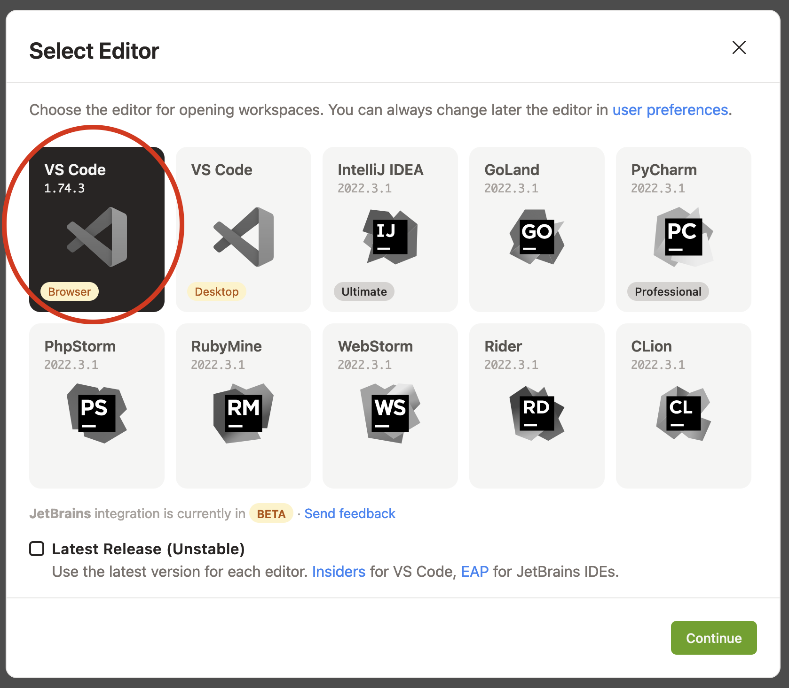
⚠️ Passez à la slide suivante avant d’aller plus loin
Workspaces GitPod 🗂
Vous arrivez sur la page listant les "workspaces" GitPod :
Un workspace est une instance d’un environnement de travail virtuel (C’est un ordinateur distant)
⚠ Faites attention à réutiliser le même workspace tout au long de ce cours⚠

Permissions GitPod <→ GitHub 🔐
Pour les besoins de ce cours, vous devez autoriser GitPod à pouvoir effectuer certaines modification dans vos dépôts GitHub
Rendez-vous sur la page des intégrations avec GitPod
Éditez les permissions de la ligne "GitHub" (les 3 petits points à droits) et sélectionnez uniquement :
user:emailpublic_repoworkflow
Démarrer l’environnement GitPod
Cliquez sur le bouton ci-dessous pour démarrer un environnement GitPod personnalisé:

Après quelques secondes (minutes?), vous avez accès à l’environnement:
Gauche: navigateur de fichiers ("Workspace")
Haut: éditeur de texte ("Get Started")
Bas: Terminal interactif
À droite en bas: plein de popups à ignorer (ou pas?)
Source disponible dans: https://github.com/cicd-lectures/gitpod
Checkpoint 🎯
Vous devriez pouvoir taper la commande
whoamidans le terminal de GitPod:Retour attendu:
gitpod
Vous devriez pouvoir fermer le fichier "Get Started"…
… et ouvrir le fichier
.gitpod.yml
On peut commencer !
Guide de survie en ligne de commande
Remise à niveau / Rappels
CLI
🇬🇧 CLI == "Command Line Interface"
🇫🇷 "Interface de Ligne de Commande"
Anatomie d’une commande
Séparateur : l’espace
Premier élément (
ls) : c’est la commandeLes éléments commençant par un tiret
-sont des "options" et/ou drapeaux ("flags")"Option" == "Optionnel"
Les autres éléments sont des arguments (
/bin)Nécessaire (par opposition)
Manuel des commande
Afficher le manuel de
<commande>:man <commande> # Commande 'man' avec comme argument le nom de ladite commandeNavigation avec les flèches haut et bas
Tapez
/puis une chaîne de texte pour chercherTouche
npour sauter d’occurrence en occurrence
Touche
qpour quitter
🎓 Essayez avec ls, chercher le mot color
💡 La majorité des commandes fournit également une option (
--help), un flag (-h) ou un argument (help)Google c’est pratique aussi hein !
Raccourcis
Dans un terminal Unix/Linux/WSL :
CTRL + C: Annuler le process ou prompt en coursCTRL + L: Nettoyer le terminalCTRL + A: Positionner le curseur au début de la ligneCTRL + E: Positionner le curseur à la fin de la ligneCTRL + R: Rechercher dans l’historique de commandesTab: Compléter la commande
🎓 Essayez-les !
Commandes de base 1/2
pwd: Afficher le répertoire courant🎓 Option
-P?
ls: Lister le contenu du répertoire courant🎓 Options
-aet-l?
cd: Changer de répertoire🎓 Sans argument : que se passe t’il ?
cat: Afficher le contenu d’un fichier🎓 Essayez avec plusieurs arguments
mkdir: créer un répertoire🎓 Option
-p?
Commandes de base 2/2
echo: Afficher un (des) message(s)rm: Supprimer un fichier ou dossiertouch: Créer un fichiergrep: Chercher un motif de textecode: Ouvre le fichier dans l’éditeur de texte
Arborescence de fichiers 1/2
Le système de fichier a une structure d’arbre
La racine du disque dur c’est
/: 🎓ls -l /Le séparateur c’est également
/: 🎓ls -l /usr/bin
Deux types de chemins :
Absolu (depuis la racine): Commence par
/(Ex./usr/bin)Sinon c’est relatif (e.g. depuis le dossier courant) (Ex
./binoulocal/bin/)

Arborescence de fichiers 2/2
Le dossier "courant" c’est
.: 🎓ls -l ./bin # Dans le dossier /usrLe dossier "parent" c’est
..: 🎓ls -l ../ # Dans le dossier /usr~(tilde) c’est un raccourci vers le dossier de l’utilisateur courant : 🎓ls -l ~-(minus) racourci pour revenir au dernier repertoire visitéSensible à la casse (majuscules/minuscules) et aux espaces : 🎓
ls -l /bin ls -l /Bin mkdir ~/"Accent tué" ls -d ~/Accent\ tué
Un language (?)
Variables interpolées avec le caractère "dollar"
$:echo $MA_VARIABLE echo "$MA_VARIABLE" echo ${MA_VARIABLE} # Recommendation echo "${MA_VARIABLE}" MA_VARIABLE="Salut tout le monde" echo "${MA_VARIABLE}"Sous commandes avec
$(<command>):
echo ">> Contenu de /tmp :\n$(ls /tmp)"Des
if, desforet plein d’autres trucs (https://tldp.org/LDP/abs/html/)
Codes de sortie
Chaque exécution de commande renvoie un code de retour (🇬🇧 "exit code")
Nombre entier entre 0 et 255 (en POSIX)
Code accessible dans la variable éphémère
$?:
ls /tmp
echo $?
ls /do_not_exist
echo $?
# Une seconde fois. Que se passe-t'il ?
echo $?Entrée, sortie standard et d’erreur

ls -l /tmp
echo "Hello" > /tmp/hello.txt
ls -l /tmp
ls -l /tmp >/dev/null
ls -l /tmp 1>/dev/null
ls -l /do_not_exist
ls -l /do_not_exist 1>/dev/null
ls -l /do_not_exist 2>/dev/null
ls -l /tmp /do_not_exist
ls -l /tmp /do_not_exist 1>/dev/null 2>&1Pipelines
Le caractère "pipe"
|permet de chaîner des commandesLe "stdout" de la première commande est branchée sur le "stdin" de la seconde
Exemple : Afficher les fichiers/dossiers contenant le lettre
ddans le dossier/bin:
ls -l /bin
ls -l /bin | grep "d" --color=autoExécution 1/2
Les commandes sont des fichier binaires exécutables sur le système :
command -v cat # équivalent de "which cat" ls -l "$(command -v cat)"La variable d’environnement
$PATHliste les dossiers dans lesquels chercher les binaires💡 Utiliser cette variable quand une commande fraîchement installée n’est pas trouvée
Exécution 2/2
Exécution de scripts :
Soit appel direct avec l’interprétateur :
sh ~/monscript.txtSoit droit d’exécution avec un "shebang" (e.g.
#!/bin/bash)$ chmod +x ./monscript.sh $ head -n1 ./monscript.sh #!/bin/bash $ ./monscript.sh # Exécution
Comment fonctionnent les Internets?
Que se passe t’il quand je tape google.com dans mon navigateur et que j’appuie sur entree?
Resolution DNS
Connection TCP (eventuellement TLS)
Envoi d’une requette HTTP
Reception d’une reponse
Rendu de la page.
Zoom sur HTTP
Faire l’anatomie d’une requette / reponse HTTP, Verbes, Headers, Body, Status code etc…
Expliquer que le but c’est de normaliser un format d’echange de donnees.
Comment parler HTTP depuis le terminal?
Presentation de curl. donner des exemples pratiques pour utilser -v, -L, --data, -X.
Poster du contenu sera vers l’API.
Exercice
Les faire curler voi.com, les faire observer toutes les etapes de la requete, la 301 upgrade vers https avec -v et -o /dev/null
Le Langage Go

Qu’est ce que Go?
🧱 Langage fortement typé
💻 Compilé
© Syntaxe proche du C
☁️ Gestion de la mémoire automatisée
🔄 Conçu pour le traitement concurrent
Go Propulse Le Cloud!
Issu de chez Google
Première version publique en 2009
v1.0 en 2012 … et rétrocompatible depuis!
Utilisé dans de nombreux projets!
Docker, Kubernetes, Terraform, Prometheus, Grafana…
🎓 Exercice: Un Premier Programme en Go
Dans le répertoire
workspacecréez un repertoirehelloworldDans ce répertoire, créez un fichier
main.goet copiez le code ci-dessous.
package main
import (
"fmt"
)
func main() {
fmt.Println("Hello ENSG!")
}Compilez votre programme a l’aide de la commande
go build ./main.goExecutez le programme généré
./main
✅ Solution: Un Premier Programme en Go
# Crée un répertoire helloworld
mkdir -p /workspace/helloworld
# Saute dans le répertoire
cd /workspace/helloworld
# Crée un fichier main.go
touch main.go
# Ouvre le fichier main.go dans l'éditeur
code main.go
# Compile le programme
go build ./main.go
# Exécute le programme.
./main💡 go run ./main.go compile et execute le programme directement!
$ go run ./main.go
Hello ENSG!Formatage de Code
Formatage du code automatique, si vous appuyez sur
Ctrl+SPas de débat tabs vs spaces 🤡, c’est des tabs.
Anatomie d’un Fichier go (1/2)
package main
import (
"fmt"
)
func main() {
fmt.Println("Hello ENSG!")
}Anatomie d’un Fichier go (2/2)
func: Declare une fonctionmain:Cette fonction appelle la fonction
Printlndu packagefmtEn passant la chaine de caractères "Hello ENSG!"
package: declare que ce fichier fait partie du packagemain.import: importe le packagefmtdans le fichier
Packages & Imports (1/2)
Un package est un groupe logique de symboles (variables, constantes, types et fonction)
Un package est identifié par une URL indiquant ou le télécharger
👉 Tous les packages sont uniques!
Ex:
github.com/jlevesy/prometheus-elector/config
Sauf pour la librarie standard, ou il n’y a pas de domaines
Ex:
net/http,os
Un package est importé par un autre package
Ici notre programme importe le package
fmt
Packages & Imports (2/2)
Un package est représenté par un répertoire dans un dépot de code
Tous les fichiers go presents dans un même repertoire doivent declarer le meme package
Convention: Le nom du package déclaré est le même que celui du répertoire content le fichier
Ex: Les fichiers présents dans
github.com/jlevesy/prometheus-elector/configcommencent tous parpackage config
Mais ce n’est pas le cas de notre programme?
ℹ️ Le Package Spécial main
Ce package est le
point d’entréedu programme.La fonction
maindu packagemainest la première fonction appellée lors de l’exécution d’un programme go.
Packages et Visibilité
La visibilité en dehors du package d’un symbole déclaré dans un package est controllée par l’utilisation d’une majuscule ou minuscule en premier caractère.
Une majuscule rendra le symbole publique et utilisable en dehors du package.
Une minuscule rendra le symbole privé seulement accessible dans le package courant.
// fonction privée du package courant. Ne peut pas être utilisée a l'extérieur.
func privateFunc() {
// appelle la fonction `readContent` du package os.
// ❌ Ne compile pas: `readContent` n'est pas exportée.
content := os.readContent("/some/file")
}
// fonction publique du package courant.
// Peut être appellée depuis un autre package.
func PublicFunc() {
// appelle la fonction `OpenFile` du package os.
// ✅ compile, `OpenFile` est exportée!
file, _ := os.OpenFile("/some/file")
}
// Variable de package publique.
var PublicVar int = 12Controller la visibilité des symboles exporté permet de s’assurer que le package sera bien utilisé!
C’est l’idée d’encapsulation, on expose uniquement ce dont l’utilisateur à besoin.
Origine des Packages
Votre fichier peut dépendre d’un package issu de:
Votre de projet courant
La (très fournie) librarie standard de Go
D’une librairie externe
package main
import (
// Imports de la librairie standard.
"crypto/tls"
"fmt"
"io"
"net/http"
// Import du projet courant.
"mondomaine.com/monprojet/pkg/helpers"
// Imports de librairie externes (dépendances).
"github.com/prometheus/client_golang/prometheus"
)Variables (1/3)
Une variable est une zone mémoire allouée contenant une valeur
func main() {
// Declare une variable de type string et assigne à la valeur par defaut du type.
// "" pour string.
var message string
// Assigne (copie) la valeur "Hello ENSG!" a la variable message.
message = "Hello ENSG!"
// Est équivalent a:
var message string = "Hello ENSG!"
// Est encore équivalent a... avec une syntaxe compacte.
// Ici le compilateur devine le type de la variable en fonction de la valeur assignée.
message := "Hello ENSG!"
// Affiche la valeur de la variable message dans la sortie standard.
fmt.Println(message)
}Variables (2/3)
Une variable est définie dans un "scope", par défaut une fonction. C’est sa durée de vie.
func doSomething() {
var age int64
age = readAge()
// ❌ Ne compile pas: newAge n'est pas définie dans ce scope.
newAge = 45
fmt.Println(age)
}
func readAge() int64 {
// ❌ Ne compile pas. age n'est pas définie dans ce scope.
age = 42
newAge := readAgeFile()
return newAge
}Variables (3/3)
⚠️ Go est un langage fortement typé ⚠️
func main() {
// Déclare et initialise une variable message de type string.
message := "Hello ENSG!"
// Déclare et initialise une variable age de type int.
age := 43
// Assigne la valeur age dans la variable message.
// ❌ Ne compile pas!
// message: cannot use age (variable of type int) as string value in assignment.
message = age
}Types Scalaires
Numeriques:
int,intX,uint,uintX,float32,float64Booléen:
boolChaine de caractères UTF-8:
stringAutres:
byte(octet),rune(caractère UTF-8)
Conversions
func main() {
var i int = 42
var f float64 = float64(i)
var u uint = uint(f)
}Controle de Flot
Controle de Flot: if (1/2)
func main() {
// if / else classique.
ok := doSomething()
if ok {
fmt.Println("C'est OK!")
} else {
fmt.Println("C'est pas OK!")
}
}
func doSomething() bool {
return true
}Controle de Flot: if (2/2)
func main() {
// if / else avec short statement.
// avantage: ok n'exsite que dans le scope du if.
if ok := doSomething(); ok {
fmt.Println("C'est OK!")
} else {
fmt.Println("C'est pas OK!")
}
// Ne compile pas: ok n'est pas défini.
ok = true
}
func doSomething() bool {
return true
}Controle de Flot: switch
func main() {
// switch
age := readAge()
switch age {
case 10:
fmt.Println("Hello 10")
case 42:
fmt.Println("Hello 42")
default:
fmt.Prinln("Hello darkness my old friend")
}
}
func readAge() int {
return 42
}Controle de Flot: boucle for
func sum0to9() {
var total int
for i := 0; i < 10; i++ {
total += i
}
fmt.Println("Total", total)
}Fonctions(1/4)
Une fonction est un groupement logique d’instructions
Accepte entre 0 et N arguments
🎉 Retourne entre 0 et N résultats 🎉
// Un fonction qui accepte une string et ne retourne rien.
func sayHello(message string) {
fmt.Println("Hello:", message)
}
// Une fonction qui accepte deux entiers et qui retourne un float64 et une erreur.
func divide(numerator, denominator int) (float64, error) {
if denominator == 0 {
return 0, errors.New("can't divide by 0")
}
return numerator / denominator, nil
}Fonctions(2/4)
Les fonctions peuvent être manipulées comme des valeurs!
// Une fonction qui accepte une chaine de caractères
// ... et qui retourne une fonction qui n'accepte aucun argument
// mais qui retourne une chaine de caractères.
func messWithFuncs(name string) func() string {
// Les fonctions peuvent etre manipulées comme des valeurs!
fn := func() string {
return "Hello " + name
}
return fn
}Fonctions(3/4)
Go permets de "reporter" l’exécution d’une fonction quand une fonction parente se termine
Pratique pour garantir qu’une resource soit libérée quoi qu’il se passe lors de l’exécution de la fonction.
Similaire aux "destructeurs" en C++
func faireDeLaPolitique() {
rendreLargent := func() {
fmt.Println("Argent rendu")
}
// Quoi qu'il advienne, l'argent sera rendu.
// Peu importe le résultat des élections.
defer rendreLargent()
if elu := elections(); elu {
fmt.Println("Je suis élu")
return
}
fmt.Printn("Je ne suis pas élu :(")
}Fonctions(4/4)
Les arguments de fonctions sont passés par valeur.
Cela signifie que les valeurs des arguments sont copiés lors de l’appel
func main() {
name := "John"
addGreeting(name)
// Affiche "John" et non "Hello John".
fmt.Println(name)
}
func addGreeting(name string) {
name = "Hello " + name
}Pointeurs (1/3)
Déclarer une variable reviens à indiquer au programme d’allouer une certaine quantité de mémoire (en fonction du type de la variable) à une adresse en mémoire
🎓 Go permets de référencer cet emplacement memoire en copiant son adresse dans une autre variable avec l’opérateur
&. Autrement dit, on crée un pointeur.
func main() {
// On déclare et initialise une variable. Cela aloue de la mémoire sur la pile.
var message string = "Hello ENSG!"
// On copie l'adresse memoire de cette variable dans une nouvelle variable.
// Pour cela on utilise l'opérateur & (réference).
var pointerToMessage *string = &message
// Affiche: message address in memory is: 0xc000014070
fmt.Println("message address in memory is:", pointerToMessage)
}Pointeurs (2/3)
À l’inverse, on peut aussi accéder au contenu d’une variable référencée par un pointeur.
🎓 Cela est appelé déréférencer un pointeur, avec l’opérateur
*.
func main() {
var message string = "Hello ENSG!"
var pointerToMessage *string = &message
// Affiche: message is: Hello ENSG!"
fmt.Println("message is:", *pointerToMessage)
}Pointeurs (3/3)
🎓 Les types pointeur sur X sont des types dit de référence.
🎓 La valeur par défaut d’un type référence est
nil.Il existe d’autres types références en go.
func main() {
// Le `= nil` est optionel ici: la valeur par défaut d'un pointeur est nil.
var nilPointer *string = nil
fmt.Println("address is:", nilPointer)
// A votre avis: que fait cette ligne?
fmt.Println("message is:", *nilPointer)
}🎓 Exercice: Corriger la Fonction
Corriger la fonction
addGreetingpour qu’elle affiche correctementHello JohnSans retourner de valeur.
func main() {
name := "John"
addGreeting(name)
// Affiche "John" et non "Hello John".
fmt.Println(name)
}
func addGreeting(name string) {
name = "Hello " + name
}✅ Solution: Corriger la Fonction
func main() {
name := "John"
// On passe en argument de addGreeting l'adresse de la variable `name`.
addGreeting(&name)
fmt.Println(name)
}
func addGreeting(namePtr *string) {
// La valeur de la variable référencée par namePtr égale à
// la chaine de caractères "Hello " concaténée avec
// la valeur de la variable référencée par namePtr.
*namePtr = "Hello " + *namePtr
}Gestion d’Erreur (1/2)
Go traite les erreurs avec des valeurs retour au lieu d’exeptions
Il est commun qu’une fonction qui puisse échouer retourne une valeur et un résultat.
Il convient alors de vérifier l’erreur retournée soit égale a nil.
…Sinon il faudra la gérer!
func main() {
file, err := os.Open("/super/file")
if err != nil {
// Si err est non nil, alors l'opération à échouée,
fmt.Println("Impossible d'ouvrir le fichier", err)
return
}
// On s'assure de toujours fermer le fichier ouvert.
defer file.Close()
// On peut intéragir avec le fichier!
}Gestion d’Erreur (2/2)
Certaines instructions peuvent mettre le programme dans un état ou il ne peut plus s’exécuter.
Par exemple, accéder à un pointeur
nil
Dans ce cas la, l’exécution de la fonction s’arrête et on parle de
panic
Collections
Collections: Arrays
Un tableau de taille fixe de N elements.
⚠️ La taille du tableau fait partie de son type
Limite: ne peut pas être changée une fois le tableau instancié.
func main() {
// Declare et initialise un tableau de 2 strings.
var intArray [2]string
// On peut assigner un élément du tableau en utilisant son index.
intArray[0] = 1
intArray[1] = 3
// On accède a un élément du tableau en utilisant son index.
fmt.Println(intArray[0], intArray[1])
anotherArray := [4]int{2, 4, 6, 8}
// ❌ Ne compile pas: la taille fait partie du type!
// On assigne un tableau de 4 entrées a un tableau de deux entrées
intArray = anotherArray
}👉 On évite en général de les utiliser directement, sauf bonne raison.
Collections: Slices (1/5)
Une slice est une référence sur un sous ensemble d’entrées dans un tableau
func main() {
anArray := [4]int{2, 4, 6, 8}
// Declare et initialise une slice référençant les entrées
// entre l'index 1 et 3 du tableau anArray.
// Se lit interval [1:4[, du coup 1,2 et 3.
var aSlice []int = anArray[1:4]
// ⚠️ Une ecriture écrit une valeur dans le tableau référencé!
aSlice[0] = 9
fmt.Println(aSlice) // [9, 6, 8]
fmt.Println(anArray) // [2, 9, 6, 8]
}Collections: Slices (2/5)
On peut initialiser directement une slice sans passer par un tableau.
On peut aussi initialiser une slice avec l’operateur
make
func main() {
aSlice := []int{2, 4, 6, 8}
// Sélectionne les entrées entre l'index 2 et 3 de la slice aSlice.
anotherSlice := aSlice[2:4]
fmt.Println(aSlice) // [2, 4, 6, 8]
fmt.Println(anotherSlice) // [6, 8]
// Initialise une slice de strings de 3 entrées.
yetAnotherSlice := make([]string, 3)
fmt.Println(yetAnotherSlice) // ["", "", ""]
}Collections: Slices (3/5)
Une slice possède deux caractéristiques importantes:
Sa taille: le nombre d’éléments présents dans la slice
On y accède a l’aide de la fonction
len
Sa capacité: la taille totale du tableau référencé
On y accède a l’aide de la fonction
cap
func main() {
sliceOne := []int{0, 1, 2, 3}
sliceTwo := sliceOne[0:2]
// Affiche "Length: 2 Capacity: 4"
fmt.Println("Length: ", len(sliceTwo), "Capacity: ", cap(sliceTwo))
}Collections: Slices (4/5)
On peut concaténer des objets à une slice avec l’operateur
append⚠️ Cela n’ajoute pas nécessairement un entrée a la slice passée en parametre.
Dans le cas ou le tableau sous jacent est plein (len == cap),
appendva réallouer un tableau et copier toutes les entées dans ce nouveau tableau.👉 En conséquence: il faut TOUJOURS assigner la valeur retournée par
append
func main() {
// On ajoute l'entrée 10 a la slice aSlice
aSlice := []int{2, 4, 6, 8}
aSlice = append(aSlice, 10)
fmt.Println(aSlice) // [2, 4, 6, 8, 10]
// On ajoute tous les items de la `anotherSlice` a la slice `aSlice`
// Et on assigne le résultat à la variable yetAnotherSlice
// Notez les "..."
anotherSlice := []int{10, 12, 14, 16}
yetAnotherSlice := append(aSlice, anotherSlice...)
fmt.Println(yetAnotherSlice) // [2, 4, 6, 8, 10, 12, 14, 16]
}Collections: Slices (5/5)
Le type slice de X, comme le type pointeur sur X, est un type référence.
Sa valeur par défaut est
nilAccéder à une slice nil provoque un arrêt de l’exécution
En revanche:
appendetlensavent gérer une nil slice.
func main() {
var nilSlice []string
// panic!: on accède a un tableau qui n'existe pas.
v := nilSlice[0] // 💥
fmt.Println(len(nilSlice), cap(nilSlice)) // 0, 0
nilSlice = append(nilSlice, "foo", "bar", "biz")
fmt.Println(nilSlice) // ["foo", "bar", "biz"]
}Parcourir une slice ou un tableau
Go fournit la fonction
rangequi permet de parcourir une collection.rangeaccepte une collection, et retourne deux valeurs:L’index courant dans la collection
La valeur de la collection a l’index
func main() {
slice := []int{2, 4, 6, 8}
// Affiche:
// Index: 0 Value: 2
// Index: 1 Value: 4
// Index: 2 Value: 6
// Index: 3 Value: 8
for index, value := range slice {
fmt.Println("Index: ", index, "Value: ", value)
}
}🎓 Exercice: Convertir une collection d’entiers en une collection de strings
Ecrire une fonction
toStringSlicequi convertit slice d’entiers en une slice de strings.🕵️: Il faut utiliser la fonction strconv.Itoa doc
✅ Solution: Convertir une collection d’entiers en une collection de strings
func main() {
input := []int{1, 2, 3, 4}
output := toStringSlice(input)
fmt.Println(output)
}
func toStringSlice(input []int) []string {
// On alloue une slice de string de la taille de la slice d'entiers donnée en paramètre.
result := make([]string, len(input))
// Pour chaque entrée de la slice input...
for i, v := range input {
// On ecrit le resultat de la conversion
// dans la slice de resultat a l'index courant.
result[i] = strconv.Itoa(v)
}
return result
}Collections: maps (1/3)
Tableau associatif clé-valeur
Initialisée de façon littérale, ou avec
makeOn récupère sa taille avec
lenOn supprime une clé avec
deleteType référence, comme les pointeurs out les slices
Une map peut être nil,
lenretournera 0.
Collections: maps (2/3)
Exemple d’écriture
func main() {
// Déclaration et initialisation d'une map de façon littérale.
mapAges := map[string]int{
"Julien": 35,
"Damien": 36,
}
// Déclaration et initialisation d'une map de taille 2.
mapVilles := make(map[string]string, 2)
// Ecritures des valeurs dans la map.
mapVilles["Julien"] = "Lyon"
mapVilles["Damien"] = "St-Etienne"
var nilMap map[int]int
nilMap[21] = 42 // panic! écriture dans une map qui n'est pas instanciée
// On peut suprimer une entrée d'une map
delete(mapVilles, "Julien")
// Affiche 2, 1, 0.
fmt.Println(len(mapAges), len(mapVilles), len(nilMap))
}Collections: maps (3/3)
Exemple de lecture
func main() {
// Déclaration et initialisation d'une map de façon littérale.
mapAges := map[string]int{
"Julien": 35,
"Damien": 36,
}
// Lecture sans vérification.
// Si la clé existe, retourne la valeur associée.
// Si la clé n'existe pas, retoure la valeur par défaut du type de la valeur.
ageJulien := mapAges["Julien"]
fmt.Println("Age de Julien", ageJulien)
// Lecture avec vérification.
// Si la clé existe, la valeur sera retournée, et ok sera a true
// Si la clé n'existe pas, ok sera false.
ageMichel, ok := mapAges["Michel"]
if !ok {
fmt.Println("Pas d'age pour Michel")
} else {
fmt.Println("Age de Michel", ageMichel)
}
}Parcourir une map
rangesupporte aussi les maps dans une boucle forAssigne la clé et la valeur courante
⚠️ L’ordre de parcours n’est pas déterministe! Il ne faut pas en dépendre!
func main() {
mapAges := map[string]int{
"Julien": 35,
"Damien": 36,
}
// Affiche soit:
// Julien a 35 ans
// Damien a 35 ans
// OU
// Damien a 35 ans
// Julien a 35 ans
for name, age := range mapAges {
fmt.Printf("%s a %d ans\n", name, age)
}
}🎓 Exercice: Comptez les occurences de mots dans une chaine de caractère
Ecrivez une fonction
WordCounten go qui accepte une chaine de caractère et qui retourne le nombre d’occurences de chacun des mots contenu dans la chaine.Indice: La signature de votre fonction devrait resembler a
func WordCount(str string) map[string]int.La valeur de retour mappe le mot vers le nombre de fois qu’il est apparu.
Indice:
strings.Fields(doc) sépare les mots d’une chaine de caractère et retourne une string.
✅ Solution: Comptez les occurences de mots dans une chaine de caractère
func main() {
input := "The quick quick brown fox jumps over the lazy lazy dog"
result := WordCount(input)
fmt.Println(result)
}
func WordCount(input string) map[string]int {
result := make(map[string]int)
for _, word := range strings.Fields(input) {
result[word]++
}
return result
}Structures (1/3)
Type déclaré représentant une collection fixe d’attributs (aussi appelés membres)
Les attributs commençant par une lettre majuscules sont accessibles en dehors du package. Ceux qui commencent par une lettre minuscule ne le sont pas.
// Déclaration du type lecture, composé de 3 attributs.
type Lecture struct {
Topic string
Duration time.Duration
Credits int
}
func main() {
// On declare et initialise une nouvelle variable de type Lecture.
coursCICD := Lecture{
Topic: "CICD",
Duration: 3 * 6 * time.Hour,
Credits: 2,
}
// On prends la référence de la variableCICD
var ptrVersCoursCICD *Lecture = &coursCICD
// On accède aux valeurs des membres de la variable coursCICD avec `.`.
fmt.Println("Sujet du cours", coursCICD.Topic)
// `.` Fonctionne aussi sur un pointeur!
fmt.Println("Durée du cours", ptrVersCoursCICD.Duration)
}Structures (2/3)
La valeur par défaut d’une structure est égale a l’ensemble des valeurs par défaut de ses membres.
// Déclaration du type lecture, composé de 4 attributs.
type Lecture struct {
Topic string
Duration time.Duration
Credits int
// attribut secret, seulement accessible dans le package courant.
secret string
}
func main() {
coursVide := Lecture{
Topic: "",
Duration: time.Duration(0),
Credits: 0,
}
coursDéfaut := Lecture{}
if coursVide == coursDéfaut {
// Affiche OK.
fmt.Println("OK")
}
}Structures (3/3)
Toute structure doit instanciée doit être dans un état utilisable.
Si les valeurs par défaut ne suffisent pas, on peut fournir une fonction d’initialisation.
Similaire aux "constructeurs" dans d’autres langages.
// Déclaration du type lecture, composé de 4 attributs.
type FileReader struct {
File *os.File
}
func NewFileReader(path string) (*FileReader, error) {
file, err := os.Open(path)
if err != nil {
return nil, err
}
return &FileReader{
File: file,
}
}
func main() {
// ❌ instanciation sans utiliser la fonction d'initialisation.
var reader FileReader
// ✅
reader, err := NewFileReader("/some/file")
}Annotations de Structures
Go permets d’annoter les membres d’une structure
Utilisation diverses
Ex: indiquer le champ d’un object JSON a lié à l’attribut.
type City struct {
ID string `json:"id"`
Name string `json:"name"`
}
// {"id": "1", "name": "Lyon"}Definir des Types
Nous avons utilisé le mot clef
typepour définir un nouveau type de structure.Mais
typepeut être appliqué á des tas d’autre choses.
// Déclare un type Color représenté par un entier.
type Color int
const (
ColorBlue = 0
ColorGreen = 1
)
// Déclare un type Car représenté par une structure composé de trois attributs.
type Car struct {
Color Color
Engine Engine
Battery Battery
}
// Déclare un type Garage, qui est une map entre le nom du propriétaire et la voiture.
type Garage map[string]Car
// Déclare un type CarOption, qui est une fonction qui accepte un pointeur sur Car et retourne une erreur.
type CarOption func(*Car) errorTypes et Méthodes (1/2)
Il est possible d’attacher des méthodes aux types que l’on définit
// Définit un type Color représenté en mémoire par un entier.
type Color int
// Attache une méthode String a toute instance de la valeur Color
// qui retourne le nom de la couleur sous forme de chaine de Caractères.
func (c Color) String() string {
switch c {
case ColorBlue:
return "blue"
case ColorGreen:
return "green"
default:
return "unknown"
}
}
// Bloc de constantes déclarant les couleurs possibles
const (
ColorBlue Color = 1
ColorGreen Color = 2
)
func main() {
color := ColorBlue
fmt.Prntln("La couleur est:", color.String())
}Types et Méthodes (2/2)
Une structure avec des méthodes est l’équivalent d’une classe dans d’autres langages.
Le "Receveur" est équivalent a this en C++ ou Java.
type Car struct {
Brand string
Color Color
}
// Attache une méthode a toute instance de type "pointeur sur Car".
// Le premier argument avant le nom de la méthode est appelé "receveur".
func (c *Car) Describe() {
fmt.Printf("Car brand is: %s, car color is %s\n", c.Brand, c.Color.String())
}
func main() {
car := Car{
Brand: "Renault",
Color: ColorBlue,
}
car.Describe()
}Receveurs: Pointeurs ou Valeurs?
On peut attacher une méthode sur une valeur du type, ou sur un pointeur.
L’opérateur
.(accés) référence et déréférence les pointeurs implicitement.Quelques règles:
Sur les types scalaires (int, string etc…) on préfèrera les valeurs, la copie ne coute rien.
Sur les collections et fonctions, on garde les valeurs, ce sont des types références.
Sur les structs, on préfère attacher au pointeurs car cela évite une copie parfois lourde.
Types Abstraits: Interfaces (1/3)
Une interface décrit un jeu de méthodes.
Une variable du type de l’interface peut recevoir n’importe quel type qui implémente les méthodes de l’interface.
Le comportement d’un appel de méthode est celui du type concret caché derrière l’interface. C’est ce qu’on appelle le Polymorphisme.
Types Abstraits: Interfaces (2/3)
type Vehicle interface {
Ride()
}
type Scooter struct{}
func (s *Scooter) Ride() {
fmt.Println("Riding a Scooter")
}
type Bicycle struct{}
func (b *Bicycle) Ride() {
fmt.Println("Ride a Bicycle")
}
func main() {
// La variable vehicle peut recevoir soit un Scooter, soit un Bicycle.
// Ces deux types satisfont l'interface `Vehicle`.
var vehicle Vehicle
vehicle = &Scooter{}
// Affiche "Riding a Scooter".
vehicle.Ride()
vehicle = &Bicycle{}
// Affiche "Rinding a Bicycle".
vehicle.Ride()
}Types Abstraits: Interfaces (3/4)
Une interface est un type référence vers un autre type, sa valeur par défaut est
nil.Les interfaces sont implicites:
Du moment que le type de la valeur satisfait toutes les methodes de l’interface, alors il est considéré comme implémentant l’interface.
Pas de mot clé
implementscomme en Java
Types Abstraits: Interfaces (4/4)
Pourquoi s’embêter à faire des interfaces?
Fournir du code générique
Découpler, cacher la complexité
Exemple: Cacher une dépendance à une base de données derrière une interface
// writeHello écrit hello dans n'importe quelle destination du moment qu'elle satisfait `io.Writer`
func writeHello(dest io.Writer) {
dest.Write([]byte("hello"))
}
func main() {
var buf bytes.Buffer
// Ici on écrit dans un buffer en mémoire.
writeHello(&buf)
file, _ := os.Open("./file")
defer file.Close()
// Ici on l'écrit dans un ficher.
writeHello(file)
}Interfaces Importantes en Go
package
io:package
http:http.Handler permet de gérer et répondre à une requete HTTP.
Le type
error
type error interface {
Error() string
}Nommage de variables
Convention: La longueur du nom d’une variable est proportionnelle à sa durée de vie.
Certaines exceptions:
errpour une valeur d’erreurctxtoute instance d’un acontext.ContextReceveurs de méthodes (ie
*Store⇒st)Et d’autres…
Quelques Exemples
Decoder du JSON
type City struct {
ID string `json:"id"`
Name string `json:"name"`
}
// {"id": "1", "name": "Lyon"}
const payload = `[{"id":"1","name":"Lyon"},{"id":"2","name":"Paris"}]`
func main() {
var cities []City
if err := json.Unmarshal([]byte(payload), &cities); err != nil {
fmt.Println("cannot unmarshal", err)
return
}
fmt.Println(cities)
}Quelques Exemples
Lire l’intégralité d’un Buffer
func main() {
var buf bytes.Buffer
readBytes, err := io.ReadAll(&buf)
if err != nil {
// KO.
}
// OK!
}Quelques Exemples
Faire une requete HTTP
func main() {
resp, err := http.Get("https://google.com")
if err != nil {
// Handle err...
}
if resp.StatusCode != http.StatusOK {
// Code non OK. Ouch.
}
// On va accéder au Body.
// Il faut s'assurer de toujours le fermer.
defer resp.Body.Close()
}🎓 Exercice: Donnez le Climat de Tatooine
On vous demande le programme go suivant:
Fait une requete a swapi.dev pour récupérer les informations de la planete Tatooine
L’URL a appeler est https://swapi.dev/api/planets/1/
Si la requète est réussie alors on lit l’intégralité du corps de la réponse
Et on déserialise la réponse dans un object pour accéder au
climatBonus: Une fois fini, essayez de nous donner le diametre de l’étoile noire aussi.
✅ Solution: Le Climat de Tatootine
type Planet struct {
Climate string `json:"climate"`
}
func main() {
resp, err := http.Get("https://swapi.dev/api/planets/1")
if err != nil {
fmt.Println("Cannot query swapi", err)
return
}
if resp.StatusCode != http.StatusOK {
fmt.Println("Bad status", resp.Status)
return
}
defer resp.Body.Close()
readBody, err := io.ReadAll(resp.Body)
if err != nil {
fmt.Println("Can't read body", err)
return
}
var tatooine Planet
if err := json.Unmarshal(readBody, &tatooine); err != nil {
fmt.Println("Can't unmarshal payload", err)
return
}
fmt.Println("Tatooine's climate is", tatooine.Climate)
}Réferences
Les fondamentaux de git
Tracer le changement dans le code
avec un VCS : 🇬🇧 Version Control System
également connu sous le nom de SCM (🇬🇧 Source Code Management)
Pourquoi un VCS ?
Pour conserver une trace de tous les changements dans un historique
Pour collaborer efficacement sur un même référentiel de code source
Concepts des VCS

Quel VCS utiliser ?

Nous allons utiliser Git
Git
Git is a free and open source distributed version control system designed to handle everything from small to very large projects with speed and efficiency.
Les 3 états avec Git
L’historique ("Version Database") : dossier
.gitDossier de votre projet ("Working Directory") - Commande
La zone d’index ("Staging Area")

Source : https://git-scm.com/book/fr/v2/D%C3%A9marrage-rapide-Rudiments-de-Git#les_trois%C3%A9tats
🎓 Exercice :avec Git - 1.1
Dans le terminal de votre environnement GitPod:
Créez un dossier vide nommé
projet-vcs-1dans le répertoire/workspace, puis positionnez-vous dans ce dossiermkdir -p /workspace/projet-vcs-1/ cd /workspace/projet-vcs-1/Est-ce qu’il y a un dossier
.git/?Essayez la commande
git status?
Initialisez le dépôt git avec
git initEst-ce qu’il y a un dossier
.git/?Essayez la commande
git status?
✅ Solution : avec Git - 1.1
mkdir -p /workspace/projet-vcs-1/
cd /workspace/projet-vcs-1/
ls -la # Pas de dossier .git
git status # Erreur "fatal: not a git repository"
git init ./
ls -la # On a un dossier .git
git status # Succès avec un message "On branch master No commits yet"🎓 Exercice :avec Git - 1.2
Créez un fichier
README.mddedans avec un titre et vos nom et prénomsEssayez la commande
git status?
Ajoutez le fichier à la zone d’indexation à l’aide de la commande
git add (…)Essayez la commande
git status?
Créez un commit qui ajoute le fichier
README.mdavec un message, à l’aide de la commandegit commit -m <message>Essayez la commande
git status?
✅ Solution : avec Git - 1.2
echo "# Read Me\n\nObi Wan" > ./README.md
git status # Message "Untracked file"
git add ./README.md
git status # Message "Changes to be committed"
git commit -m "Ajout du README au projet"
git status # Message "nothing to commit, working tree clean"Terminologie de Git - Diff et changeset
diff: un ensemble de lignes "changées" sur un fichier donné
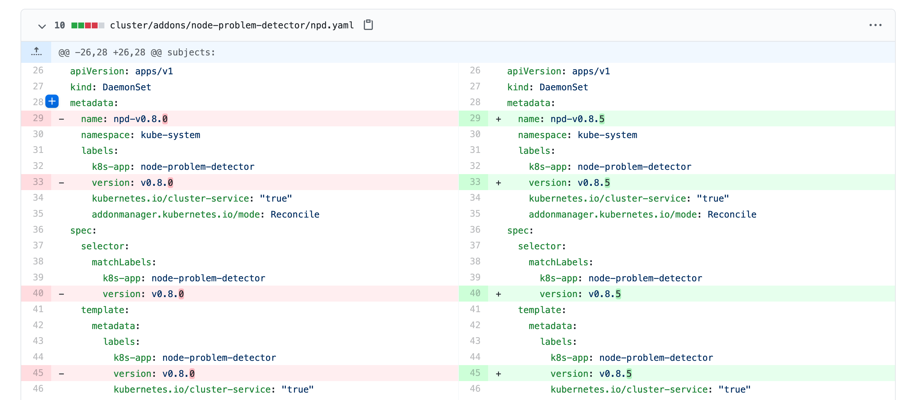
changeset: un ensemble de "diff" (donc peut couvrir plusieurs fichiers)
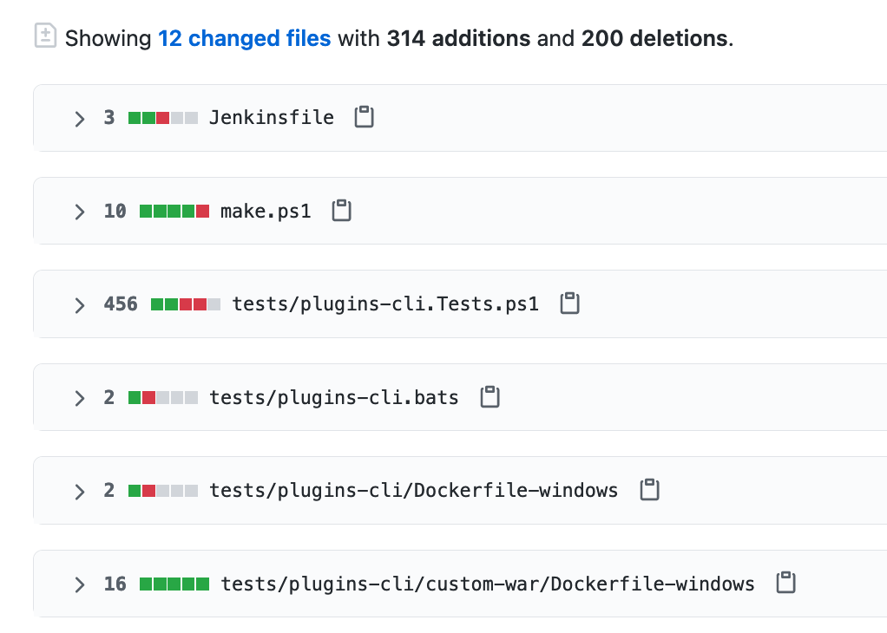
Terminologie de Git - Commit
commit: un changeset qui possède un (commit) parent, associé à un message

"HEAD": C’est le dernier commit dans l’historique

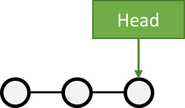
🎓 Exercice :avec Git - 2
Afficher la liste des commits
Afficher le changeset associé à un commit
Modifier du contenu dans
README.mdet afficher le diffAnnulez ce changement sur
README.md
✅ Solution : avec Git - 2
git log
git show # Show the "HEAD" commit
echo "# Read Me\n\nObi Wan Kenobi" > ./README.md
git diff
git status
git checkout -- README.md
git statusTerminologie de Git - Branche
Abstraction d’une version "isolée" du code
Concrètement, une branche est un alias pointant vers un "commit"
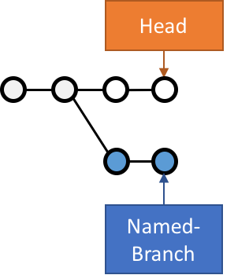
🎓 Exercice :avec Git - 3
Créer une branche nommée
feature/htmlAjouter un nouveau commit contenant un nouveau fichier
index.htmlsur cette brancheAfficher le graphe correspondant à cette branche avec
git log --graph
✅ Solution : avec Git - 3
git branch feature/html && git switch feature/html
# Ou git switch --create feature/html
echo '<h1>Hello</h1>' > ./index.html
git add ./index.html && git commit --message="Ajout d'une page HTML par défaut" # -m / --message
git log
git log --graph
git lg # cat ~/.gitconfig => regardez la section section [alias], cette commande est déjà définie!Terminologie de Git - Merge
On intègre une branche dans une autre en effectuant un merge
Plusieurs strategies sont possibles pour merger:
Quand l’historique de commit n’a pas diverge: git fait avancer la branche directement, c’est un fast-forward
Dans le cas contraire, un nouveau commit est créé, fruit de la combinaison de 2 autres commits

🎓 Exercice :avec Git - 4
Merger la branche
feature/htmldans la branche principale⚠️ Pensez à utiliser l’option
--no-ff(no fast forward) pour forcer git a créer un commit de merge.
Afficher le graphe correspondant à cette branche avec
git log --graph
✅ Solution : avec Git - 4
git switch main
git merge --no-ff feature/html # Enregistrer puis fermer le fichier 'MERGE_MSG' qui a été ouvert
git log --graph
# git lgExemple d’usages de VCS
"Infrastructure as Code" :
Besoins de traçabilité, de définition explicite et de gestion de conflits
Collaboration requise pour chaque changement (revue, responsabilités)
Code Civil:
🎯 Checkpoint
On a vu :
A quoi sert
gitet sa nomenclature de base (diff, changest, commit, branch)A quoi reconnaître un dépôt initialisé local et l’espace de travail associé
Comment utiliser git localement (ajouter au staging, commiter)
l’historique et un merge avec git (localement)
Présentation de votre projet
TODO REFAIRE TOUTE CETTE PARTIE.
Contexte
Expliquer l’app Expliquer la fonctionnalite qu’on implemente Trouver une excuse pour justifier le fait qu’on donne une tarball.
Prise en Main du Projet (1/2)
Une équipe technique de Bananes avait commencé l’implémentation du serveur, et à fourni une archive téléchargeable ICI, contenant le code source du projet
Bananes vous assure qu’ils ont suivi toutes les "best practices" du développement logiciel sur minitel
Il y à un
LISEZMOI.txtà la racine du projet :tada:… et pas grand chose d’autre?
Prise en Main du Projet (2/2)
# Création du répertoire menu-server
mkdir -p /workspace/menu-server && cd /workspace/menu-server
# Téléchargez le projet sur votre environnement de développement
curl -sSLO https://cicd-lectures.github.io/slides/2023/media/menu-server.tar.gz
# Décompresser et extraire l'archive téléchargée
tar xvzf ./menu-server.tar.gzA partir de la vous pouvez ouvrir le fichier LISEZMOI.txt et commencer à suivre ses instructions.
Qu’est-ce qui va / ne va pas dans ce projet d’après vous?
Triste Rencontre avec la Réalité
Pas de gestion de version…
Le projet ne fonctionne pas, tous les menus retournés s’appellent "TODO" :sob:
Le correctif ne semble pas compliqué à faire…
… sauf que vous ne pouvez pas compiler le projet!
Il va falloir remédier à ça d’une façon ou d’une autre, sinon vous n’allez pas aller bien loin!
🎓 Exercice : Initialisez un dépôt git
Nettoyez le contenu superflu du projet et initialisez un dépôt git dans le répertoire, puis créez un premier commit
Par contenu superflu, nous entendons:
Tout ce qui est potentiellement généré
Les scripts de lancement obsolètes et inutiles
Un petit renommage du LISEZMOI.txt en README.md et un coup de nettoyage de son contenu
💡 Pour chaque "popup" de l’éditeur (en bas à droite), choisissez "Oui" ou "Reload"
✅ Solution Exercice
# On évacue le contenu inutile
rm -rf dist/ menu-server.tar.gz
rm executer.sh
# On renomme LISEZMOI.txt en README.md
mv LISEZMOI.txt README.md
# On nettoie son contenu
code README.md
# On initialise un nouveau dépôt git
git init
# On ajoute tous les fichiers contenus a la zone de staging.
git add .
# On crée un nouveau commit
git commit -m "Add initial menu-server project files"Checkpoint 🎯
Vous avez récupéré un projet Java qui semble fonctionner…
..mais pas vraiment à l’état de l’art.
Application du chapitre précédent : vous avez initialisé un projet
gitlocal
Cycle de vie de votre projet
🤔 Quel est le problème ?
On a du code. C’est un bon début. MAIS:
Qu’est ce qu’on "fabrique" à partir du code ?
Comment faire pour "fabriquer" de la même manière pour tout•e•s (💻 | 🖥 ) ?
Que "fabrique" t’on à partir du code ? 📦
Un livrable :
C’est ce que vos utilisateurs vont utiliser: un binaire à télécharger ? L’application de production ?
C’est versionné
C’est reproductible
Comment fabriquer du code?
TODO (refaire)
Faire suivre un cycle de vie precis
build, lint, test, integration test, release.
go n’impose pas forcement de cycle de vie, c’est specifique a l’application
On utilise Make pour
normaliserle cyle de vie
TODO DETERER LES slides make?
Comment garantir que le processus de livraison est reproductble?
Gestion des dependances
Gestion des outils
Parler des go modules, de ce que fait la toolchain go https://go.dev/ref/mod, faire un resume """"digeste""" de ca.
Mettre son code en sécurité
Une autre petite histoire
Votre dépôt est actuellement sur votre ordinateur.
Que se passe t’il si :
Votre disque dur tombe en panne ?
On vous vole votre ordinateur ?
Vous échappez votre tasse de thé / café sur votre ordinateur ?
Une météorite tombe sur votre bureau et fracasse votre ordinateur ?

Testé, pas approuvé.
Comment éviter ça ?
Répliquer votre dépôt sur une ou plusieurs machines !
Git est pensé pour gérer ce de problème
Gestion de version décentralisée
Chaque utilisateur maintient une version du dépôt local qu’il peut changer à souhait
Indépendant du commit, ils peuvent "pousser" une version sur un dépôt distant
Un dépôt local peut avoir plusieurs dépôts distants.
Centralisé vs Décentralisé
Créer un dépôt distant
Consulter l’historique de commits
Dans votre workspace
# Liste tous les commits présent sur la branche main.
git logAssocier un dépôt distant (1/2)
Git permet de manipuler des "remotes"
Image "distante" (sur un autre ordinateur) de votre dépôt local.
Permet de publier et de rapatrier des branches.
Le serveur maintient sa propre arborescence de commits, tout comme votre dépôt local.
Un dépôt peut posséder N remotes.
Associer un dépôt distant (2/2)
# Liste les remotes associés a votre dépôt
git remote -v
# Ajoute votre dépôt comme remote appelé `origin`
git remote add origin https://<URL de votre dépôt>
# Vérifiez que votre nouveau remote `origin` est bien listé a la bonne adresse
git remote -vPublier une branche dans sur dépôt distant
Maintenant qu’on a un dépôt, il faut publier notre code dessus !
# git push <remote> <votre_branche_courante>
git push origin mainQue s’est il passé ?

gita envoyé la branchemainsur le remoteorigin… qui à accepté le changement et mis à jour sa propre branche main.
gita créé localement une branche distanteorigin/mainqui suis l’état demainsur le remote.Vous pouvez constater que la page github de votre dépôt affiche le code source
Refaisons un commit !
git commit --allow-empty -m "Yet another commit"
git push origin main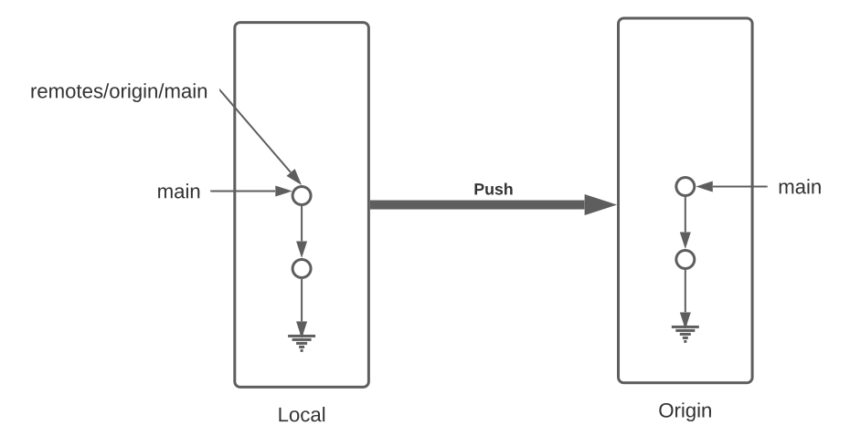
Branche distante
Dans votre dépôt local, une branche "distante" est automatiquement maintenue par git
C’est une image du dernier état connu de la branche sur le remote.
Pour mettre a jour les branches distantes depuis le remote il faut utiliser :
git fetch <nom_du_remote>
# Lister toutes les branches y compris les branches distances
git branch -a
# Notez que est listé remotes/origin/main
# Mets a jour les branches distantes du remote origin
git fetch origin
# Rien ne se passe, votre dépôt est tout neuf, changeons ça!Créez un commit depuis GitHub directement
Cliquez sur le bouton éditer en haut à droite du "README"
Changez le contenu de votre README
Dans la section "Commit changes"
Ajoutez un titre de commit et une description
Cochez "Commit directly to the main branch"
Validez
GitHub crée directement un commit sur la branche main sur le dépôt distant
Rapatrier les changements distants
# Mets à jour les branches distantes du dépôt origin
git fetch origin
# La branche distante main a avancé sur le remote origin
# => La branche remotes/origin/main est donc mise a jour
# Ouvrez votre README
code ./README.md
# Mystère, le fichier README ne contient pas vos derniers changements?
git log
# Votre nouveau commit n'est pas présent, AHA !
Branche Distante VS Branche Locale
Le changement à été rapatrié, cependant il n’est pas encore présent sur votre branche main locale
# Merge la branch distante dans la branche locale.
git merge origin/mainVu que votre branche main n’a pas divergé (== partage le même historique) de la branche distante, git merge effectue automatiquement un "fast forward".
Updating 1919673..b712a8e
Fast-forward
README.md | 1 +
1 file changed, 1 insertion(+)Cela signifie qu’il fait "avancer" la branche main sur le même commit que la branche origin/main

# Liste l'historique de commit
git log
# Votre nouveau commit est présent sur la branche main !
# Juste au dessus de votre commit initial !Et vous devriez voir votre changement dans le ficher README.md
Git(Hub|Lab|tea|…)
Un dépôt distant peut être hébergé par n’importe quel serveur sans besoin autre qu’un accès SSH ou HTTPS.
Une multitudes de services facilitent et enrichissent encore git: (GitHub, Gitlab, Gitea, Bitbucket…)
⇒ Dans le cadre du cours, nous allons utiliser GitHub.
git + Git(Hub|Lab|tea|…) = superpowers !
GUI de navigation dans le code
Plateforme de gestion et suivi d’issues
Plateforme de revue de code
Integration aux moteurs de CI/CD
And so much more…
Intégration Continue (CI)
Continuous Integration doesn’t get rid of bugs, but it does make them dramatically easier to find and remove.
— Martin Fowler
Pourquoi la CI ?
But : Détecter les fautes au plus tôt pour en limiter le coût

Qu’est ce que l’Intégration Continue ?
Objectif : que l’intégration de code soit un non-évènement
Construire et intégrer le code en continu
Le code est intégré souvent (au moins quotidiennement)
Chaque intégration est validée par une exécution automatisée
Et concrètement ? 1/2
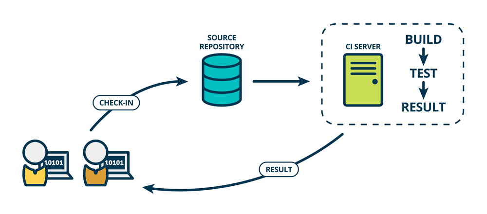
Un•e dévelopeu•se•r ajoute du code/branche/PR :
une requête HTTP est envoyée au système de "CI"
Le système de CI compile et teste le code
On ferme la boucle : Le résultat est renvoyé au dévelopeu•se•r•s
Et concrètement ? 2/2

Quelques moteurs de CI connus
Hébergés en ligne : Travis CI, Semaphore CI, Circle CI, Codefresh, GitHub Actions
GitHub Actions
GitHub Actions est un moteur de CI/CD intégré à GitHub
✅ : Très facile à mettre en place, gratuit et intégré complètement
❌ : Utilisable uniquement avec GitHub, et DANS la plateforme GitHub
Concepts de GitHub Actions

Concepts de GitHub Actions - Step 1/2
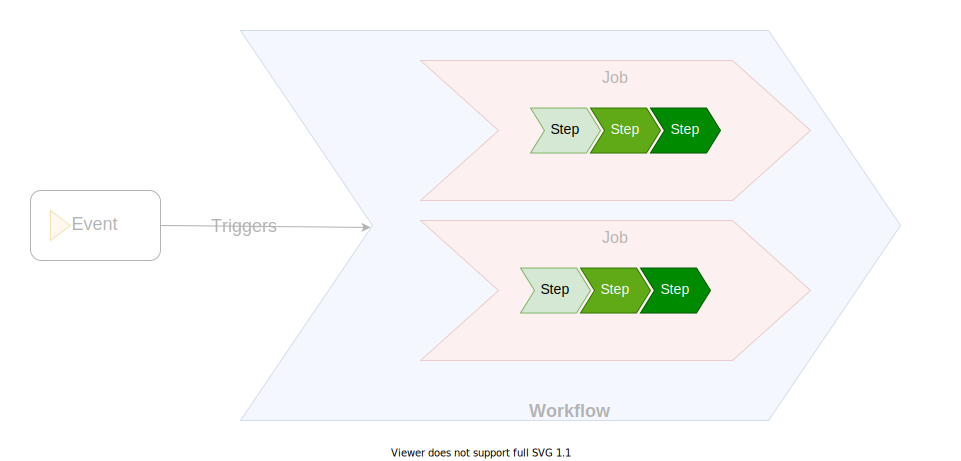
Concepts de GitHub Actions - Step 2/2
Une Step (étape) est une tâche individuelle à faire effectuer par le CI :
Par défaut c’est une commande à exécuter - mot clef
runOu une "action" (quel est le nom du produit déjà ?) - mot clef
usesRéutilisables et partageables
steps: # Liste de steps
# Exemple de step 1 (commande)
- name: Say Hello
run: echo "Hello ENSG"
# Exemple de step 2 (une action)
- name: 'Login to DockerHub'
uses: docker/login-action@v1 # https://github.com/marketplace/actions/docker-login
with:
username: ${{ secrets.DOCKERHUB_USERNAME }}
password: ${{ secrets.DOCKERHUB_TOKEN }}Concepts de GitHub Actions - Job 1/2

Concepts de GitHub Actions - Job 2/2
Un Job est un groupe logique de tâches :
Enchaînement séquentiel de tâches
Regroupement logique : "qui a un sens"
Exemple : "compiler puis tester le résultat de la compilation"
jobs: # Map de jobs
build: # 1er job, identifié comme 'build'
name: 'Build Slides'
runs-on: ubuntu-22.04 # cf. prochaine slide "Concepts de GitHub Actions - Runner"
steps: # Collection de steps du job
- name: 'Build the JAR'
run: mvn package
- name: 'Run Tests on the JAR file'
run: mvn verify
deploy: # 2nd job, identifié comme 'deploy'
# ...Concepts de GitHub Actions - Runner
Un Runner est un serveur distant sur lequel s’exécute un job.
Mot clef
runs-ondans la définition d’un jobDéfaut : machine virtuelle Ubuntu dans le cloud utilisé par GitHub
D’autres types sont disponibles (macOS, Windows, etc.)
Possibilité de fournir son propre serveur
Concepts de GitHub Actions - Workflow 1/2

Concepts de GitHub Actions - Workflow 2/2
Un Workflow est une procédure automatisée composée de plusieurs jobs, décrite par un fichier YAML.
On parle de "Workflow/Pipeline as Code"
Chemin :
.github/workflows/<nom du workflow>.ymlOn peut avoir plusieurs fichiers donc plusieurs workflows
.github/workflows
├── ci-cd.yaml
├── bump-dependency.yml
└── nightly-tests.yamlConcepts de GitHub Actions - Évènement 1/2
Concepts de GitHub Actions - Évènement 2/2
Un évènement du projet GitHub (push, merge, nouvelle issue, etc. ) déclenche l’exécution du workflow
Plein de type d’évènements : push, issue, alarme régulière, favori, fork, etc.
Exemple : "Nouveau commit poussé", "chaque dimanche à 07:00", "une issue a été ouverte" …
Un workflow spécifie le(s) évènement(s) qui déclenche(nt) son exécution
Exemple : "exécuter le workflow lorsque un nouveau commit est poussé ou chaque jour à 05:00 par défaut"
Concepts de GitHub Actions : Exemple Complet
Workflow File :
name: Node.js CI
on: # Évènements déclencheurs
- push:
branch: main # Lorsqu'un nouveau commit est poussé sur la branche "main"
- schedule:
- cron: "*/15 * * * *" # Toutes les 15 minutes
jobs:
test-linux:
runs-on: ubuntu-22.04
steps:
- uses: actions/checkout@v4
- run: npm install
- run: npm test
test-mac:
runs-on: macos-12
steps:
- uses: actions/checkout@v4
- run: npm install
- run: npm testEssayons GitHub Actions
But : nous allons créer notre premier workflow dans GitHub Actions
N’hésitez pas à utiliser la documentation de GitHub Actions:
Retournez dans le dépôt créé précédemment dans votre environnement GitPod
Exemple simple avec GitHub Actions
Dans le projet "menu-server", sur la branch
main,Créez le fichier
.github/workflows/bonjour.ymlavec le contenu suivant :
name: Bonjour
on:
- push
jobs:
dire_bonjour:
runs-on: ubuntu-22.04
steps:
- run: echo "Bonjour 👋"Commitez puis poussez
Revenez sur la page GitHub de votre projet et naviguez dans l’onglet "Actions" :
Voyez-vous un workflow ? Et un Job ? Et le message affiché par la commande
echo?
Exemple simple avec GitHub Actions : Récapépète

Exemple GitHub Actions : Checkout
Supposons que l’on souhaite utiliser le code du dépôt…
Essayez: modifiez le fichier
bonjour.ymlpour afficher le contenu deREADME.md:name: Bonjour on: - push jobs: dire_bonjour: runs-on: ubuntu-22.04 steps: - run: ls -l # Liste les fichier du répertoire courant - run: cat README.md # Affiche le contenu du fichier `README.md` à la base du dépôt
Est-ce que l’étape se passe bien ? (SPOILER: non ❌ )
🎓 Exercice GitHub Actions : Checkout
But : On souhaite récupérer ("checkout") le code du dépôt dans le job
👷🏽♀️ C’est à vous d’essayer de réparer 🛠 le job :
L’étape doit être conservée et doit fonctionner
Utilisez l’action "checkout" (Documentation) du marketplace GitHub Action
Vous pouvez vous inspirer du Quickstart de GitHub Actions
✅ Solution GitHub Actions : Checkout
name: Bonjour
on:
- push
jobs:
dire_bonjour:
runs-on: ubuntu-22.04
steps:
- uses: actions/checkout@v4 # Récupère le contenu du dépôt correspondant au commit du workflow en cours
- run: ls -l # Liste les fichier du répertoire courant
- run: cat README.md # Affiche le contenu du fichier `README.md` à la base du dépôtExemple : Environnement d’exécution
Notre workflow doit s’assurer que "la vache" 🐮 doit nous lire 💬 le contenu du fichier
README.mdWAT 🤪 ?
Essayez la commande
cat README.md | cowsaydans GitPodModifiez l’étape du workflow pour faire la même chose dans GitHub Actions
SPOILER: ❌ (la commande
cowsayn’est pas disponible dans le runner GitHub Actions)
Problème : Environnement d’exécution
Problème : On souhaite utiliser les mêmes outils dans notre workflow ainsi que dans nos environnement de développement
Plusieurs solutions existent pour personnaliser l’outillage, chacune avec ses avantages / inconvénients :
Personnaliser l’environnement dans votre workflow: (⚠️ sensible aux mises à jour, ✅ facile à mettre en place)
Spécifier un environnement préfabriqué pour le workflow (⚠️ complexe, ✅ portable)
Utiliser les fonctionnalités de votre outil de CI (⚠️ spécifique au moteur de CI, ✅ efficacité)
🎓 Exercice : Personnalisation dans le workflow
But : exécuter la commande
cat README.md | cowsaydans le workflow comme dans GitPod👷🏽♀️ C’est à vous de mettre à jour le workflow pour personnaliser l’environnement :
💡 Cherchez comment installer
cowsaydans le runner GitHub (runs-on, paquetcowsaydans Ubuntu 22.04)
✅ Solution : Personnalisation dans le workflow
name: Bonjour
on:
- push
jobs:
dire_bonjour:
runs-on: ubuntu-22.04
steps:
- uses: actions/checkout@v4 # Récupère le contenu du dépôt correspondant au commit du workflow en cours
- run: |
sudo apt-get update
sudo apt-get install -y cowsay
- run: cat README.md | cowsay🎓 Exercice : Environnement préfabriqué
But : exécuter la commande
cat README.md | cowsaydans le workflow comme dans GitPodEn utilisant le même environnement que GitPod (même version de cowsay, java, etc.)
👷🏽♀️ C’est à vous de mettre à jour le workflow pour exécuter les étapes dans la même image Docker que GitPod :
✅ Solution : Environnement préfabriqué
name: Bonjour
on:
- push
jobs:
dire_bonjour:
runs-on: ubuntu-22.04
container:
image: ghcr.io/cicd-lectures/gitpod:latest
options: --user=root
steps:
- uses: actions/checkout@v4 # Récupère le contenu du dépôt correspondant au commit du workflow en cours
- run: cat README.md | cowsayCheckpoint 🎯
Quel est l’impact en terme de temps d’exécution du changement précédent ?
Problème : Le temps entre une modification et le retour est crucial

🎓 Exercice : Optimiser avec les fonctionnalités du moteur de CI
But : s’assurer que GitHub actions install et utilise
cowsayle plus efficacement possibleC’est à vous de mettre à jour le workflow pour:
Lire le contenu du fichier
README.mddans un "output" (une variable temporaire de GitHub Actions)Passer le contenu (via l’output) à une version de cowsay gérée par GitHub Actions
💡 Utilisez les GitHub Actions et documentations suivantes :
✅ Solution : Optimiser avec les fonctionnalités du moteur de CI
name: Bonjour
on:
- push
jobs:
dire_bonjour:
runs-on: ubuntu-22.04
steps:
- uses: actions/checkout@v4 # Récupère le contenu du dépôt correspondant au commit du workflow en cours
- uses: juliangruber/read-file-action@v1
id: readfile
with:
path: ./README.md
- uses: Code-Hex/neo-cowsay-action@v1
with:
message: "${{ steps.readfile.outputs.content }}"🎓 Exercice : Intégration Continue du projet "menu-server"
👷🏽♀️ C’est à vous de modifier le projet "menu-server" pour faire l’intégration continue, afin qu’à chaque commit poussé sur votre dépôt, un workflow GitHub Actions va :
Récupérer le code de l’application depuis GitHub
S’assurer d’utiliser les même versions de Java et Maven que dans Gitpod (💡
mvn -v)L’application est compilée
Le
jarde l’application est fabriqué
Pensez à supprimer/renommer le workflow
bonjour.yaml
✅ Solution : Intégration Continue du projet "menu-server"
name: Menu Server CI
on:
- push
jobs:
menu_server:
runs-on: ubuntu-22.04
steps:
- name: Checkout Code
uses: actions/checkout@v4
- name: Setup JDK Zulu 17
uses: actions/setup-java@v4
with:
distribution: 'zulu'
java-version: '17'
- name: Setup Maven 3.9.0
uses: stCarolas/setup-maven@v5
with:
maven-version: 3.9.0
- name: Check Maven tooling
run: mvn -v
- name: Build application
run: mvn compile
- name: Package application
run: mvn package🎯 Checkpoint
Pour chaque commit poussé dans la branche
mainde Menu Server,GitHub action vérifie que l’application est compilable et fabriquée,
Avec un feedback (notification GitHub).
⇒ On peut modifier notre code avec plus de confiance !
Git à plusieurs
Limites de travailler seul
Capacité finie de travail
Victime de propres biais
On ne sait pas tout

Travailler en équipe ? Une si bonne idée ?
… Mais il faut communiquer ?
… Mais tout le monde n’a pas les mêmes compétences ?
… Mais tout le monde y code pas pareil ?
Collaborer c’est pas évident, mais il existe des outils et des méthodes pour vous aider.
Cela reste des outils, ça ne résous pas tout non plus.
Git multijoueur
Git permet de collaborer assez aisément
Chaque développeur crée et publie des commits…
… et rapatrie ceux de de ses camarades !
C’est un outil très flexible… chacun peut faire ce qu’il lui semble bon !
… et (souvent) ça finit comme ça !

Un Example de Git Flow
(Attachez vous aux idées générales… les détails varient d’un projet à l’autre!)
Gestion des branches
Les "versions" du logiciel sont maintenues sur des branches principales (main, staging)
Ces branches reflètent l’état du logiciel
main: version actuelle en production
staging: prochaine version

Gestion des branches
Chaque groupe de travail (développeur, binôme…)
Crée une branche de travail à partir de la branche staging
Une branche de travail correspond à une chose à la fois
Pousse des commits dessus qui implémentent le changement


Quand le travail est fini, la branche de travail est "mergée" dans staging

Gestion des remotes
Où vivent ces branches ?
Plusieurs modèles possibles
Un remote pour les gouverner tous !
Chacun son propre remote (et les commits seront bien gardés)
… whatever floats your boat!
Un remote pour les gouverner tous
Tous les développeurs envoient leur commits et branches sur le même remote
Simple a gérer …
… mais nécessite que tous les contributeurs aient accès au dépôt
Adapté a l’entreprise, peu adapté au monde de l’open source

Chacun son propre remote
La motivation: le contrôle d’accès
Tout le monde peut lire le dépôt principal. Personne ne peut écrire dessus.
Tout le monde peut dupliquer le dépôt public et écrire sur sa copie.
Toute modification du dépôt principal passe par une procédure de revue.
Si la revue est validée, alors la branche est "mergée" dans la branche cible
C’est le modèle poussé par GitHub !

Forks ! Forks everywhere !
Dans la terminologie GitHub:
Un fork est un remote copié d’un dépôt principal
C’est la où les contributeurs poussent leur branche de travail.
Les branches de version (main, staging…) vivent sur le dépôt principal
La procédure de ramener un changement d’un fork à un dépôt principal s’appelle la Pull Request (PR)
🎓 Exercice : Créez un fork
Nous allons vous faire forker vos dépôts respectifs
Trouvez vous un binôme dans le groupe.
Rendez vous sur cette page pour inscrire votre binôme.
Depuis la page du dépôt de votre binôme, cliquez en haut à droite sur le bouton Fork.

A vous de jouer: Ajoutez la fonctionnalité "suppression d’un menu" au projet de votre binôme
🎓 Exercice : Contribuez au projet de votre binôme (1/5)
Première étape: on clone le fork dans son environnement de développement
cd /workspace/
# Clonez votre fork
git clone <url_de_votre_fork>
# Créez votre feature branch
git switch --create implement-delete
# Équivalent de git checkout -b <...>🎓 Exercice : Contribuez au projet de votre binôme (2/5)
Maintenant voici la liste des choses à faire:
Rajouter le
MenuRepositorycomme dépendance du MenuControllerImplémenter une nouvelle méthode
deleteMenuGère les requêtes
DELETE /menus/{id}Appelle la méthode
deleteByIddumenuRepositoryRéponds 200 si la suppression est réussie
Bonus si vous arrivez à faire en sorte que le serveur réponde 404 si un menu à supprimer n’existe pas.
Voici un petit article bien utile pour vous aider!
🎓 Exercice : Contribuez au projet de votre binôme (3/5)
Pour tester votre changement
# D'abord on crée un menu
curl -H "Content-Type: application/json" --data-raw '{"name": "Menu spécial du chef", "dishes": [{"name": "Bananes aux fraises"},{"name": "Bananes flambées"}]}' localhost:8080/menus# Puis on le supprime
curl -XDELETE localhost:8080/menus/4# Et on vérifie que le menu est bien supprimé
curl localhost:8080/menus🎓 Exercice : Contribuez au projet de votre binôme (4/5)
Une fois que vous êtes satisfaits de votre changement il vous faut maintenant créer un commit et pousser votre nouvelle branche sur votre fork.
🎓 Exercice : Contribuez au projet de votre binôme (5/5)
Dernière étape: ouvrir une pull request!
Rendez vous sur la page de votre projet
Sélectionnez votre branche dans le menu déroulant "branches" en haut a gauche.
Cliquez ensuite sur le bouton ouvrir une pull request
Remplissez le contenu de votre PR (titre, description, labels) et validez.

La procédure de Pull Request
Objectif : Valider les changements d’un contributeur
Technique : est-ce que ça marche ? est-ce maintenable ?
Fonctionnel : est-ce que le code fait ce que l’on veux ?
Humain : Propager la connaissance par la revue de code.
Méthode : Tracer les changements.
Revue de code ?
Validation par un ou plusieurs pairs (technique et non technique) des changements
Relecture depuis github (ou depuis le poste du développeur)
Chaque relecteur émet des commentaires // suggestions de changement
Quand un relecteur est satisfait d’un changement, il l’approuve
La revue de code est un exercice difficile et potentiellement frustrant pour les deux parties.
Comme sur Twitter, on est bien à l’abri derrière son écran ;=)
En tant que contributeur, soyez respectueux de vos relecteurs : votre changement peut être refusé et c’est quelque chose de normal.
En tant que relecteur, soyez respectueux du travail effectué, même si celui ci comporte des erreurs ou ne correspond pas à vos attentes.
💡 Astuce: Proposez des solutions plutôt que simplement pointer les problèmes.
🎓 Exercice : Relisez votre PR reçue !
Vous devriez avoir reçu une PR de votre binôme :-)
Relisez le changement de la PR
Effectuez quelques commentaires (bonus: utilisez la suggestion de changements), si c’est nécessaire
Si elle vous convient, approuvez la!
En revanche ne la "mergez" pas, car il manque quelque chose…
Validation automatisée
Objectif: Valider que le changement n’introduit pas de régressions dans le projet
A chaque fois qu’un nouveau commit est créé dans une PR, une succession de validations ("checks") sont déclenchés par GitHub
Effectue des vérifications automatisées sur un commit de merge entre votre branche cible et la branche de PR
Quelques exemples
Analyse syntaxique du code (lint), pour détecter les erreurs potentielles ou les violations du guide de style
Compilation du projet
Execution des tests automatisés du projet
Déploiement du projet dans un environnement de test…
Ces "checks" peuvent êtres exécutés par votre moteur de CI ou des outils externes.
🎓 Exercice : Déclencher un Workflow de CI sur une PR
Votre PR n’a pas déclenché le workflow de CI de votre binôme 🤔
Il faut changer la spec de votre workflow pour qu’il se déclenche aussi sur une PR
Vous pouvez changer la spec du workflow directement dans votre PR
La documentation se trouve par ici
🎯 Checkpoint
Règle d’or: Si le CI est rouge, on ne merge pas la pull request !
Même si le linter "ilécon", même si on a la flemme et "sépanou" qui avons cassé le CI.
Tests Automatisés
Qu’est ce qu’un test ?
C’est du code qui vérifie que votre code fait ce qu’il est supposé faire.
Pourquoi faire des tests ?
Prouve que le logiciel se comporte comme attendu a tout moment.
Détecte les impacts non anticipés des changements introduits
Evite l’introduction de régressions
Écrire des tests est un acte préventif et non curatif.
Qu’est ce que l’on teste ?
Une fonction
Une combinaison de classes
Un serveur applicatif et une base de données
On parle de SUT, System Under Test.
Différents systèmes, Différentes Techniques de Tests
Test unitaire
Test d’integration
Test de bout en bout
Smoke tests
Test de performance
(La terminologie varie d’un développeur / langage / entreprise / écosystème à l’autre)
Test unitaire
Test validant le bon comportement une unité de code.
Prouve que l’unité de code interagit correctement avec les autres unités.
Par exemple :
Retourne les bonnes valeur en fonction des paramètres donnés
Appelle la bonne méthode du bon attribut avec les bons paramètres
Mise en place de l’exercice
Depuis votre environnement de développement, dans le repertoire du fork de votre binôme
Créez une feature branch
add-tests.
TODO REFAIRE TOUT CA avec go.
Ajout des Outils de Tests Automatisés au Projet (3/3)
Exécutez les tests unitaires avec la commande
mvn testSpoiler :
No tests to run…Pourquoi ca ?

🎓 Exercice : Corriger un Bug (1/11)
La classe
ListMenuServicesemble être "buggée"…Tous les noms des menus sont TEST TODO 😱
Quand on regarde l’implémentation, on se rends compte que le problème provient de la méthode statique
fromModelde la classeMenuDtoMême si la correction est aisée, on va d’abord écrire un test unitaire qui valide le comportement du service.
Notre SUT:
ListMenuService+DTO+Model
🎓 Exercice : Corriger un Bug (2/11)
Mise en place du test
// src/test/java/com/cicdlectures/menuserver/service/ListMenuServiceTests.java
public class ListMenuServiceTests {
private ListMenuService subject;
@BeforeEach
public void init() {
subject = new ListMenuService(null);
}
@Test
@DisplayName("lists all known menus")
public void listsKnownMenus() {
List<MenuDto> got = subject.listMenus();
}
}🎓 Exercice : Corriger un Bug (3/11)
Super on à un test, il ne reste plus qu’à le lancer avec
mvn test🎉Spoiler
java.lang.NullPointerException

🎓 Exercice : Corriger un Bug (4/11)
Le
ListMenuServiceà besoin d’unMenuRepositorypour fonctionner.Cependant :
On ne veut pas valider le comportement du
MenuRepository, il est en dehors de notre SUT.Pire, on ne veut pas se connecter à une base de donnée pendant un test unitaire.
🎓 Exercice : Corriger un Bug (5/11)
Solution : On fournit une "fausse implémentation" au service, un mock.
// src/test/java/com/cicdlectures/menuserver/service/ListMenuServiceTests.java
private MenuRepository menuRepository;
private ListMenuService subject;
@BeforeEach
public void init() {
this.menuRepository = mock(MenuRepository.class);
this.subject = new ListMenuService(this.menuRepository);
}🎓 Exercice : Corriger un Bug (6/11)
Ce "mock" peut être piloté dans les tests!
@Test
@DisplayName("lists all known menus")
public void listsKnownMenus() {
// Quand le repository reçoit l'appel findAll
// Alors il retourne la valeur null.
when(menuRepository.findAll()).thenReturn(null);
}🎓 Exercice : Corriger un Bug (7/11)
Super on a un test unitaire, il ne reste plus qu’à le lancer avec
mvn test🎉Spoiler: ✅

Sauf qu’on avait pas un bug à corriger au fait?
🎓 Exercice : Corriger un Bug (8/11)
Objectif: Vérifier que les valeurs retournées par le ListMenuService sont cohérentes
avec les données en base, pour cela il nous faut:
Préparer un jeu de données de test et configurer le mock du repository pour qu’il le retourne
Appeler notre service
Comparer le résultat obtenu du service avec des valeurs attendues.
🎓 Exercice : Corriger un Bug (9/11)
@Test
@DisplayName("lists all known menus")
public void listsKnownMenus() {
// Défini une liste de menus avec un menus.
Iterable<Menu> existingMenus = Arrays.asList(
new Menu(
Long.valueOf(1),
"Christmas menu",
new HashSet<>(
Arrays.asList(
new Dish(Long.valueOf(1), "Turkey", null),
new Dish(Long.valueOf(2), "Pecan Pie", null)
)
)
)
);
// On configure le menuRepository pour qu'il retourne notre liste de menus.
when(menuRepository.findAll()).thenReturn(existingMenus);
// On appelle notre sujet
List<MenuDto> gotMenus = subject.listMenus();
// On défini wantMenus, les résultats attendus
Iterable<MenuDto> wantMenus = Arrays.asList(
new MenuDto(
Long.valueOf(1),
"Christmas menu",
new HashSet<>(
Arrays.asList(
new DishDto(Long.valueOf(1), "Turkey"),
new DishDto(Long.valueOf(2), "Pecan Pie")
)
)
)
);
// On compare la valeur obtenue avec la valeur attendue.
assertEquals(wantMenus, gotMenus);
}🎓 Exercice : Corriger un Bug (10/11)
Super on a un test unitaire (qui teste!), il ne reste plus qu’à le lancer avec
mvn test🎉Spoiler:
[ERROR] Failures:
[ERROR] ListMenuServiceTests.listsKnownMenus:66
expected:
<[MenuDto(id=1, name=Christmas menu, dishes=[DishDto(id=2, name=Pecan Pie), DishDto(id=1, name=Turkey)])]>
but was:
<[MenuDto(id=1, name=TEST TODO, dishes=[DishDto(id=2, name=Pecan Pie), DishDto(id=1, name=Turkey)])]>
🎓 Exercice : Corriger un Bug (11/11)
Il ne reste plus qu’a faire la correction et le tour est joué!

Test Unitaire : Quelques Règles
Un test unitaire teste un et un seul comportement
Faites attention a ce que votre test teste vraiment quelque chose!
Avec les mocks, c’est facile de se faire piéger.
Essayez, dans la mesure du possible, d’écrire vos tests (qui échouent) avant d’écrire votre code.
Il n’y a pas de définition ferme du SUT
Attention à garder une taille raisonnable (quelques classes).
Privilégiez les tests de méthodes publiques.
Checkpoint 🎯
On a vu :
🔍 Qu’il faut tester son code
🌍 Qu’il existe différents type de tests en fonction de ce que l’on veut tester
🧩 Comment faire des tests unitaires
Test Unitaire : Pro / Cons
✅ Super rapides (<1s) et légers a executer
✅ Pousse à avoir un bon design de code
✅ Efficaces pour tester des cas limites
❌ Peu réalistes
Tester des composants indépendamment ne prouve pas que le système fonctionne une fois intégré!
✅ Solution: Tests d’intégration
Test validant qu’un assemblage d’unités se comportent comme prévu.
Teste votre application au travers de toutes ses couches
Par exemple avec menu server:
Prouve que GET /menus retourne la liste des menus enregistrés en base
Prouve que POST /menus enregistre un nouveau menu en base avec ses plats.
Définition du SUT (1/2)

Définition du SUT (2/2)
Une suite de tests d’intégration doit:
Démarrer et provisionner un environnement d’exécution (une DB, Elasticsearch, un autre service…)
Démarrer votre application
Jouer un scénario de test
Éteindre et nettoyer son environnement d’exécution pour garantir l’isolation des tests
Ce sont des tests plus lents et plus complexes que des tests unitaires. Comment gérer ça?
Exécuter Les Tests d’Intégration: Cycle de Vie Maven
Les tests d’intégration sont une autre partie du cycle de vie de l’application: la phase
verify.verifyest une méta-phase composée de 3 sous-phases :pre-integration-test: prépare l’environnement des tests d’intégrationintegration-test: execute la suite de tests d’intégrationpost-integration-test: nettoie l’environnement des tests d’intégration
⚠️ Il faut toujours appeler verify et non pas integration-test, sinon la sous-phase post-integration-test ne s’exécutera pas ⚠️
Exécuter Les Tests d’Intégration: Le Plugin failsafe (1/3)
Pour exécuter les tests d’intégration nous allons introduire un nouveau plugin:
failsafeCe plugin exécute les tests ayant le suffixe
IT.java(par exemple:MaClasseIT.java)Ce plugin s’exécute lors de la phase
integration-test
Exécuter Les Tests d’Intégration: Le Plugin failsafe (2/3)
Configurez le plugin Maven Spring Boot pour les tests d’intégration (section
<build><plugins>):
<plugin>
<groupId>org.apache.maven.plugins</groupId>
<artifactId>maven-failsafe-plugin</artifactId>
<configuration>
<skipTests>${skipIntegrationTests}</skipTests>
</configuration>
</plugin>Exécuter Les Tests d’Intégration: Le Plugin failsafe (2/3)
Cela crée les commandes suivantes:
mvn test: lance les tests unitairesmvn verify: lance les tests unitaires et d’intégrationmvn verify -DskipUnitTests=true: lance uniquement les tests d’intégration
Tests d’Intégrations: Et concrètement avec le menu-server?
Dans les faits… nous n’allons pas utiliser les phases
pre-integration-testetpost-integration-test→ Nous n’avons pas de serveur de base de données a démarrer.
→ SpringBoot intègre le démarrage et l’arrêt du serveur web dans l’exécution des tests via l’annotation
@SprintBootTest.
C’est un projet pédagogique!
Dans un "vrai" projet, on voudrait peut-être démarrer / éteindre un serveur de base de données dans ces étapes.
Nous allons écrire un test d’intégration pour l’appel GET /menus
🎓 Exercice : Ecrire un test d’integration (1/4)
Mise en place d’un test vide
// src/test/java/com/cicdlectures/menuserver/controller/MenuControllerIT.java
// Lance l'application sur un port aléatoire.
@SpringBootTest(webEnvironment = SpringBootTest.WebEnvironment.RANDOM_PORT)
// Indique de relancer l'application à chaque test.
@DirtiesContext(classMode = DirtiesContext.ClassMode.BEFORE_EACH_TEST_METHOD)
public class MenuControllerIT {
@LocalServerPort
private int port;
private URL getMenusURL() throws Exception {
return new URL("http://localhost:" + port + "/menus");
}
@Test
@DisplayName("lists all known menus")
public void listsAllMenus() throws Exception {
}
}🎓 Exercice : Ecrire un test d’integration (2/4)
Maintenant, on appelle le serveur et on verifie que l’appelle qu’il nous reponds une 200
// src/test/java/com/cicdlectures/menuserver/controller/MenuControllerIT.java
// Lance l'application sur un port aléatoire.
@SpringBootTest(webEnvironment = SpringBootTest.WebEnvironment.RANDOM_PORT)
// Indique de relancer l'application à chaque test.
@DirtiesContext(classMode = DirtiesContext.ClassMode.BEFORE_EACH_TEST_METHOD)
public class MenuControllerIT {
// ...
private RestTemplate template = new RestTemplate();
@Test
@DisplayName("lists all known menus")
public void listsAllMenus() throws Exception {
ResponseEntity<MenuDto[]> response = this.template.getForEntity(getMenusURL().toString(), MenuDto[].class);
assertEquals(HttpStatus.OK, response.getStatusCode());
}
}Bon, c’est bien sympa mais notre test n’est pas satisfaisant en l’etat. Il faut maintenat valider notre comportement pricipal: lister tous les menus connus
🎓 Exercice : Ecrire un test d’integration (3/4)
D’abord il faut provisionner des données en base.
public class MenuControllerIT {
// ...
// Injecte automatiquement l'instance du menu repository
@Autowired
private MenuRepository menuRepository;
private final List<Menu> existingMenus = Arrays.asList(
new Menu(null, "Christmas menu", new HashSet<>(Arrays.asList(new Dish(null, "Turkey", null), new Dish(null, "Pecan Pie", null)))),
new Menu(null, "New year's eve menu", new HashSet<>(Arrays.asList(new Dish(null, "Potatos", null), new Dish(null, "Tiramisu", null)))));
@BeforeEach
public void initDataset() {
for (Menu menu : existingMenus) {
menuRepository.save(menu);
}
}
// ...
}🎓 Exercice : Ecrire un test d’integration (4/4)
Il ne nous reste qu’a changer le corps du test pour verifier que le contenu de la reponse est celui auquel on s’attends.
public class MenuControllerIT {
// ...
@Test
@DisplayName("lists all known menus")
public void listsAllMenus() throws Exception {
// On declare la valeur attendue.
MenuDto[] wantMenus = {
new MenuDto(Long.valueOf(1), "Christmas menu",
new HashSet<DishDto>(
Arrays.asList(new DishDto(Long.valueOf(1), "Turkey"), new DishDto(Long.valueOf(2), "Pecan Pie")))),
new MenuDto(Long.valueOf(2), "New year's eve menu", new HashSet<DishDto>(
Arrays.asList(new DishDto(Long.valueOf(3), "Potatos"), new DishDto(Long.valueOf(4), "Tiramisu")))) };
// On fait la requête et on recupere la reponse.
ResponseEntity<MenuDto[]> response = this.template.getForEntity(getMenusURL().toString(), MenuDto[].class);
// On verifie le status de reponse.
assertEquals(HttpStatus.OK, response.getStatusCode());
// On list le corps de la reponse.
MenuDto[] gotMenus = response.getBody();
// On verifie que la reponse est la meme que celle attendue.
assertArrayEquals(wantMenus, gotMenus);
}
}🎓 Exercice: Activez les tests dans votre CI
Changez le workflow de ci de votre binôme (ou le votre) pour qu’à chaque build:
Les tests unitaires soient lancés
Les tests d’integrations soient lancés
💡 Pensez à bien regarder le cycle de vie des phases Maven
Checkpoint 🎯
On a vu :
❌ Les limites des tests unitaires
🏭 Comment faire des tests d’intégration
🤔 Tester n’est pas facile mais très utile
Docker
Remise à niveau / Rappels
🤔 Quel est le problème ?

Problème de temps exponentiel
Déjà vu ?
L’IT n’est pas la seule industrie à résoudre des problèmes…
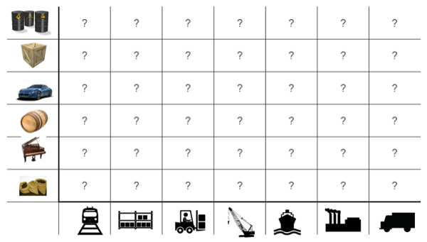
✅ Solution: Le conteneur intermodal
"Separation of Concerns"
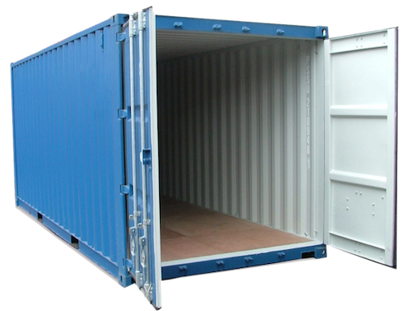
Comment ça marche ?
"Virtualisation Légère"

Conteneur != VM
"Separation of concerns": 1 "tâche" par conteneur

VMs && Conteneurs
Non exclusifs mutuellement

🎓 Exercice : où est mon conteneur ?
Retournez dans Gitpod
Dans un terminal, exécutez les commandes suivantes :
# Affichez la liste de tous les conteneurs en fonctionnement (aucun)
docker container ls
# Exécutez un conteneur
docker container run hello-world # Equivalent de l'ancienne commande 'docker run'
docker container ls
docker container ls --all
# Quelles différences ?🩻 Anatomie
Un service "Docker Engine" tourne en tâche de fond et publie une API REST
La commande
docker run …a envoyé une requêtePOSTau serviceLe service a télécharge une Image Docker depuis le registre DockerHub,
Puis a exécuté un conteneur basé sur cette image
✅ Solution : Où est mon conteneur ?
Le conteneur est toujours présent dans le "Docker Engine" même en étant arrêté
CONTAINER ID IMAGE COMMAND CREATED STATUS PORTS NAMES
109a9cdd3ec8 hello-world "/hello" 33 seconds ago Exited (0) 17 seconds ago festive_faradayUn conteneur == une commande "conteneurisée"
cf. colonne "COMMAND"
Quand la commande s’arrête : le conteneur s’arrête
cf. code de sortie dans la colonne "STATUS"
🎓 Exercice : Cycle de vie d’un conteneur en tâche de fond
Lancez un nouveau conteneur en tâche de fond, nommé
webserver-1et basé sur l’imagenginx💡
docker container run --helpou Documentation en ligne
Affichez les "logs" du conteneur (==traces d’exécution écrites sur le stdout + stderr de la commande conteneurisée)
💡
docker container logs --helpou Documentation en ligne
Comparez les versions de Linux de Gitpod et du conteneur
Regardez le contenu du fichier
/etc/os-release💡
docker container exec
✅ Solution : Cycle de vie d’un conteneur en tâche de fond
docker container run --detach --name=webserver-1 nginx
# <ID du conteneur>
docker container ls
docker container logs webserver-1
cat /etc/os-release
# ... Ubuntu ...
docker container exec webserver-1 cat /etc/os-release
# ... Debian ...🤔 Comment accéder au serveur web en tâche de fond ?
$ docker container ls
CONTAINER ID IMAGE COMMAND CREATED STATUS PORTS NAMES
ee5b70fa72c3 nginx "/docker-entrypoint.…" 3 seconds ago Up 2 seconds 80/tcp webserver-1✅ Super, le port 80 (TCP) est annoncé (on parle d'"exposé")…
❌ … mais c’est sur une adresse IP privée
docker container inspect \ --format='{{range.NetworkSettings.Networks}}{{.IPAddress}}{{end}}' \ webserver-1
🎓 Exercice : Accéder au serveur web via un port publié
But : Créez un nouveau conteneur
webserver-publicaccessible publiquementUtilisez le port
8080publique💡 Flag
--publishpourdocker container run💡 GitPod va vous proposer un popup : choisissez "Open Browser"
✅ Solution : Accéder au serveur web via un port publié
docker container run --detach --name=webserver-public --publish 8080:80 nginx
# ... container ID ...
docker container ls
# Le port 8080 de 0.0.0.0 est mappé sur le 80 du conteneur
curl http://localhost:8080
# ...🤔 D’où vient "hello-world" ?
Docker Hub (https://hub.docker.com) : C’est le registre d’images "par défaut"
Exemple : Image officielle de "nginx"
🎓 Cherchez l’image
hello-worldpour en voir la page de documentation💡 pas besoin de créer de compte pour ça
Il existe d’autre "registres" en fonction des besoins (GitHub GHCR, Google GCR, etc.)
🤔 Que contient "hello-world" ?
C’est une "image" de conteneur, c’est à dire un modèle (template) représentant une application auto-suffisante.
On peut voir ça comme un "paquetage" autonome
C’est un système de fichier complet:
Il y a au moins une racine
/Ne contient que ce qui est censé être nécessaire (dépendances, librairies, binaires, etc.)
🤔 Pourquoi des images ?
Un conteneur est toujours exécuté depuis une image.
Une image de conteneur (ou "Image Docker") est un modèle ("template") d’application auto-suffisant.
⇒ Permet de fournir un livrable portable (ou presque).
🤔 Application Auto-Suffisante ?

C’est quoi le principe ?

🤔 Pourquoi fabriquer sa propre image ?
Essayez ces commandes dans Gitpod :
cat /etc/os-release
# ...
git --version
# ...
# Même version de Linux que dans GitPod
docker container run --rm ubuntu:20.04 git --version
# docker: Error response from daemon: failed to create shim task: OCI runtime create failed: runc create failed: unable to start container process: exec: "git": executable file not found in $PATH: unknown.
# En interactif ?
docker container run --rm --tty --interactive ubuntu:20.04 git --version⇒ Problème : git n’est même pas présent !
🎓 Fabriquer sa première image
But : fabriquer une image Docker qui contient
gitDans votre workspace Gitpod, créez un nouveau dossier
/workspace/docker-git/Dans ce dossier, créer un fichier
Dockerfileavec le contenu ci-dessous :FROM ubuntu:20.04 RUN apt-get update && apt-get install --yes --no-install-recommends gitFabriquez votre image avec la commande
docker image build --tag=docker-git <chemin/vers/docker-git/Testez l’image fraîchement fabriquée
💡
docker image ls
✅ Fabriquer sa première image
mkdir -p /workspace/docker-git/ && cd /workspace/docker-git/
cat <<EOF >Dockerfile
FROM ubuntu:20.04
RUN apt-get update && apt-get install --yes --no-install-recommends git
EOF
docker image build --tag=docker-git ./
docker image ls | grep docker-git
# Doit fonctionner
docker container run --rm docker-git:latest git --versionConventions de nommage des images
[REGISTRY/][NAMESPACE/]NAME[:TAG|@DIGEST]Pas de Registre ? Défaut:
registry.docker.comPas de Namespace ? Défaut:
libraryPas de tag ? Valeur par défaut:
latest⚠️ Friends don’t let friends use
latest
Digest: signature unique basée sur le contenu
Conventions de nommage : Exemples
ubuntu:20.04⇒registry.docker.com/library/ubuntu:20.04dduportal/docker-asciidoctor⇒registry.docker.com/dduportal/docker-asciidoctor:latestghcr.io/dduportal/docker-asciidoctor:1.3.2@sha256:xxxx
🎓 Utilisons les tags
Il est temps de "taguer" votre première image !
docker image tag docker-git:latest docker-git:1.0.0Testez le fonctionnement avec le nouveau tag
Comparez les 2 images dans la sortie de
docker image ls
✅ Utilisons les tags
docker image tag docker-git:latest docker-git:1.0.0
# 2 lignes
docker image ls | grep docker-git
# 1 ligne
docker image ls | grep docker-git | grep latest
# 1 ligne
docker image ls | grep docker-git | grep '1.0.0'
# Doit fonctionner
docker container run --rm docker-git:1.0.0 git --version🎓 Mettre à jour votre image (1.1.0)
Mettez à jour votre image en version
1.1.0avec les changements suivants :Ajoutez un
LABELdont la clef estdescription(et la valeur de votre choix)Configurez
gitpour utiliser une branchemainpar défaut au lieu demaster(commandegit config --global init.defaultBranch main)
Indices :
💡 Commande
docker image inspect <image name>💡 Commande
git config --get init.defaultBranch(dans le conteneur)💡 Ajoutez des lignes à la fin du
Dockerfile
✅ Mettre à jour votre image (1.1.0)
cat ./Dockerfile
FROM ubuntu:20.04
RUN apt-get update && apt-get install --yes --no-install-recommends git
LABEL description="Une image contenant git préconfiguré"
RUN git config --global init.defaultBranch main
docker image build -t docker-git:1.1.0 ./docker-git/
# Sending build context to Docker daemon 2.048kB
# Step 1/4 : FROM ubuntu:20.04
# ---> e40cf56b4be3
# Step 2/4 : RUN apt-get update && apt-get install --yes --no-install-recommends git
# ---> Using cache
# ---> 926b8d87f128
# Step 3/4 : LABEL description="Une image contenant git préconfiguré"
# ---> Running in 0695fc62ecc8
# Removing intermediate container 0695fc62ecc8
# ---> 68c7d4fb8c88
# Step 4/4 : RUN git config --global init.defaultBranch main
# ---> Running in 7fb54ecf4070
# Removing intermediate container 7fb54ecf4070
# ---> 2858ff394edb
Successfully built 2858ff394edb
Successfully tagged docker-git:1.1.0
docker container run --rm docker-git:1.0.0 git config --get init.defaultBranch
docker container run --rm docker-git:1.1.0 git config --get init.defaultBranch
# mainCheckpoint 🎯
Une image Docker fournit un environnement de système de fichier auto-suffisant (application, dépendances, binaries, etc.) comme modèle de base d’un conteneur
On peut spécifier une recette de fabrication d’image à l’aide d’un
Dockerfileet de la commandedocker image buildLes images Docker ont une convention de nommage permettant d’identifier les images très précisément
⚠️ Friends don’t let friends use latest ⚠️
Versions
Pourquoi faire des versions ?
Un changement visible d’un logiciel peut nécessiter une adaptation de ses utilisateurs
Un humain ça s’adapte, mais un logiciel il faut l’adapter!
Cela permet de contrôler le problème de la compatibilité entre deux logiciels.
Une petite histoire
Le logiciel que vous développez utilise des données d’une API d’un site de vente.
// Corps de la réponse d'une requête GET https://supersite.com/api/item
[
{
"identifier": 1343,
// ...
}
]Voici comment est représenté un item vendu dans votre code.
public class Item {
// Identifiant de l'item représenté sous forme d'entier.
private int identifier;
// ...
}Le site décide tout d’un coup de changer le format de l’identifiant de son objet en chaîne de caractères.
// Corps de la réponse d'une requête GET https://supersite.com/api/item
[
{
"identifier": "lolilol3843",
// ...
}
]Que se passe t’il du côté de votre application ?
com.fasterxml.jackson.databind.JsonMappingException

Qu’est s’est il passé ?
Votre application ne s’attendait pas à un identifiant sous forme de chaîne de caractères !
Le fournisseur de l’API à "changé le contrat" de son API d’une façon non rétrocompatible avec votre l’existant.
Cela s’appelle un 🇬🇧 Breaking Change
Comment éviter cela ?
Laisser aux utilisateurs une marge de manoeuvre pour "accepter" votre changement.
Donner une garantie de maintien des contrats existants.
Informer vos utilisateurs d’un changement non rétrocompatible.
Anticiper les changements non rétrocompatibles à l’aide de stratégies (dépréciation).
Bonjour versions !
Une version cristallise un contrat respecté par votre application.
C’est un jalon dans l’histoire de votre logiciel
Quoi versionner ?
Le problème de la compatibilité existe dès qu’une dépendance entre deux bouts de code existe.
Une API
Une librairie
Un langage de programmation
Le noyau linux
Version sémantique

Un changement ne changeant pas le périmètre fonctionnel incrémente le numéro de version patch.
Un changement changeant le périmètre fonctionnel de façon rétrocompatible incrémente le numéro de version mineure.
Un changement changeant le périmètre fonctionnel de façon non rétrocompatible incrémente le numéro de version majeure.
En résumé
Changer de version mineure ne devrait avoir aucun d’impact sur votre code.
Changer de version majeure peut nécessiter des adaptations.
Concrètement avec une API
Offrir a l’utilisateur un moyen d’indiquer la version de l’API a laquelle il souhaite parler
Via un préfixe dans le chemin de la requête:
Via un en-tête HTTP:
Accept-version: v2.3
Version VS Git
Un identifiant de commit est de granularité trop faible pour un l’utilisateur externe.
Utilisation de tags git pour définir des versions.
Un tag git est une référence sur un commit.
🎓 Exercice : Créez et "taggez" la version v0.0.1 de votre menu-server
# Créer un tag.
git tag -a v0.0.1 -m "Release version v0.0.1"
# Publier un tag sur le remote origin.
git push origin v0.0.1"Continuous Everything"
Livraison Continue
Continuous Delivery (CD)
🤔 Pourquoi la Livraison Continue ?
Diminuer les risque liés au déploiement
Permettre de récolter des retours utilisateurs plus souvent
Rendre l’avancement visible par tous
How long would it take to your organization to deploy a change that involves just one single line of code?
— Mary and Tom Poppendieck
Qu’est ce que la Livraison Continue ?
Suite logique de l’intégration continue:
Chaque changement est potentiellement déployable en production
Le déploiement peut donc être effectué à tout moment
Your team prioritizes keeping the software deployable over working on new features
— Martin Fowler
La livraison continue est l’exercice de mettre à disposition automatiquement le produit logiciel pour qu’il soit prêt à être déployé à tout moment.
Livraison Continue avec GitHub
Hello Github Releases!
Anatomie d’une Release GitHub
Une release GiHub est associée à un tag git et porte :
Un titre
Un descriptif des changements
Une collection de d’assets dont:
Des tarballs du code source a cette version (automatique)
Et éventuellement des fichiers de votre choix (des binaires compilés par exemple)
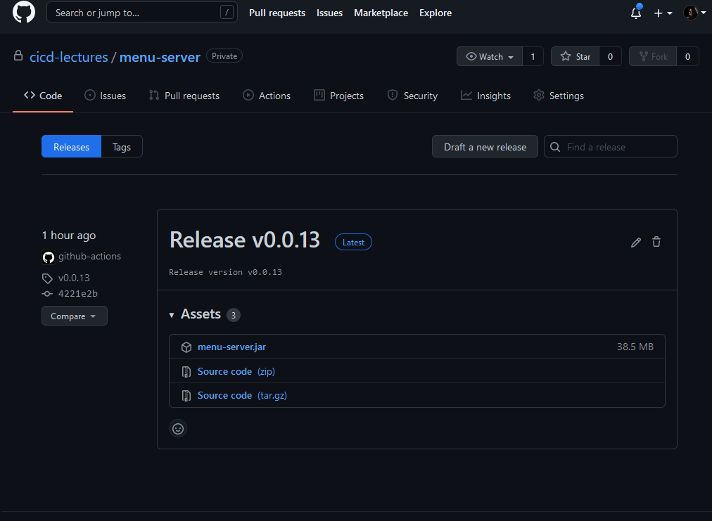
Prérequis: exécution conditionnelle des jobs
Il est possible d’exécuter conditionnellement un job ou un step à l’aide du mot clé if (documentation de if])
jobs:
release:
# Lance le job release uniquement si la branche est main.
if: contains('refs/heads/main', github.ref)
steps:
# ...🎓 Exercice: Créer une Release depuis le CI
Changez votre workflow de CI de façon à ce que sur un push de tag, le CI effectue les tâches suivantes dans un nouveau job:
Une fois que l’étape
buildest terminéeTélécharge et décompresse l’artefact généré par le job
buildCréer une nouvelle release dans votre dépôt ayant pour titre le nom du tag
Upload
jarde l’application dans cette release nouvellement créée
On vous suggère d’utiliser la CLI gh fournie par GitHub:
Astuce: pensez a bien utiliser l’option
--generate-notes
Déploiement Continu
Continuous Deployment
🤔 Qu’est ce que le Déploiement Continu ?
Version "avancée" de la livraison continue:
Chaque changement est déployé en production, de manière automatique
Continuous Delivery versus Deployment

Bénéfices du Déploiement Continu
Rends triviale les procédures de mise en production et de rollback
Encourage à mettre en production le plus souvent possible
Encourage à faire des mises en production incrémentales
Limite les risques d’erreur lors de la mise en production
Fonctionne de 1 à 1000 serveurs et plus encore…
Qu’est ce que "La production" ?
Un (ou plusieurs) ordinateur ou votre / vos applications sont exécutées
Ce sont là où vos utilisateurs "utilisent" votre code
Que ce soit un serveur web pour une application web
Ou un téléphone pour une application mobile
Certaines plateformes sont plus ou moins outillées pour la mise en production automatique
Introduction à Google Cloud Run
Dans le cadre de ce cours nous allons utiliser Google Cloud Run
Un Produit de Google Cloud Platform (GCP)
Cloud Run Permets d’exécuter des images de containers (🐳 wink wink) et de les exposer sur internet sans avoir a se soucier de l’infrastructure en dessous.
Ideal dans le cadre de notre projet!
Environment sponsorise par Voi pour le cours.
Construire une Image de Container pour Cloud Run
A la racine de votre dépôt menu-server créez un fichier
Dockerfileavec le contenu suivant :
# Depuis l'image de base azul/zulu-openjdk:11 (qui embarque un JRE dans la version 11)
FROM azul/zulu-openjdk:17
# Copier l'archive JAR depuis l'hôte dans le fichier /opt/app/menu-server.jar de l'image
COPY target/menu-server.jar /opt/app/menu-server.jar
# Définis la commande par défaut du container à java -jar /opt/app/menu-server.jar --server.port=${PORT}
# La variable d'environnement PORT est définie par Google Cloud Run à la création du container.
CMD ["java","-jar","/opt/app/menu-server.jar", "--server.port=${PORT}"]🎓 Exercice: créez et exécutez l’image dans votre Workspace
Dans un terminal, lancez les commandes suivantes:
# On repackage l'app
mvn package
IMAGE_NAME="cicdlectures/menu-server:test"
# Construit une image docker portant le tag `cicdlectures/menu-server:test`
docker image build --tag="${IMAGE_NAME}" ./
# Lance un container basé sur l'image `cicdlectures/menu-server:test` sans specifier la variable d'environnement PORT
docker container run --tty --interactive --rm --publish 8080:9090 "${IMAGE_NAME}"
# Badaboum attendu!
# Lance un container basé sur l'image `cicdlectures/menu-server:test`
docker container run --tty --interactive --rm --env PORT=9090 --publish 8080:9090 "${IMAGE_NAME}"
# Vérifiez que vous pouvez faire des requêtes au menu-server....
# Et Ctrl+C pour terminer l'exécution du containerDéployer dans Cloud Run
Les grandes étapes d’un déploiement dans Cloud Run
On construit une image de container de l’application et la publie dans une registry d’images Google Cloud.
On demande ensuite a Cloud Run d’instancier un nouveau container utilisant la nouvelle image publiée.
🎓 Exercice: Connectez vous a Google Cloud depuis votre Workspace
Cela nécessite un compte Google, si vous n’en avez pas vous pouvez en créer un ici.
# Authentifie votre instance gitpod auprès de google cloud
gcloud auth login
# Paramétrise le projet
GCP_PROJECT_NAME=voi-sdbx-ensg-2023
GCP_REGISTRY=europe-west9-docker.pkg.dev
# Indique a la CLI google cloud d'utiliser le projet partage pour le cours.
gcloud config set project "${GCP_PROJECT_NAME}"
# Authentifie le démon docker de votre instance auprès de la registry Google Cloud.
gcloud auth configure-docker "${GCP_REGISTRY}"🎓 Exercice: Déployez votre Menu Server dans Cloud Run
GCP_IMAGE_NAME="${GCP_REGISTRY}/${GCP_PROJECT_NAME}/cicd-registry/<votre-binôme>/menu-server:test-cloudrun"
# On renomme l'image avec le nom de la registry
docker image tag "${IMAGE_NAME}" "${GCP_IMAGE_NAME}"
# On publie l'image dans la registry google cloud
docker image push "${GCP_IMAGE_NAME}"
# On déploie l'image publiée dans cloud run
gcloud run deploy <votre-dépôt> --image="${GCP_IMAGE_NAME}" --region=europe-west9Mais le faire manuellement c’est pas du déploiement continu! Il faut le faire depuis GitHub action!
🎓 Exercice: Mise en Place du Déploiement Continu dans Cloud Run depuis votre Workflow
Changez votre workflow de CI pour que, sur un évènement de push de tag de version:
Une fois le build terminé un nouveau job
release-cloud-runsoit lancéCe job effectue dans l’ordre:
Télécharge l’artefact de l’étape
buildCheckout le depot (pour rapatrier le Dockerfile)
Appelle l’action Cloud Run Release pour deployer automatiquement une nouvelle version de votre application.
Bibliographie
Ligne de commande
Git / VCS
Intégration Continue
Livraison/Déploiement Continu
Tests
Autre
Merci !
damien.duportal <chez> gmail.com
jlevesy <chez> gmail.com